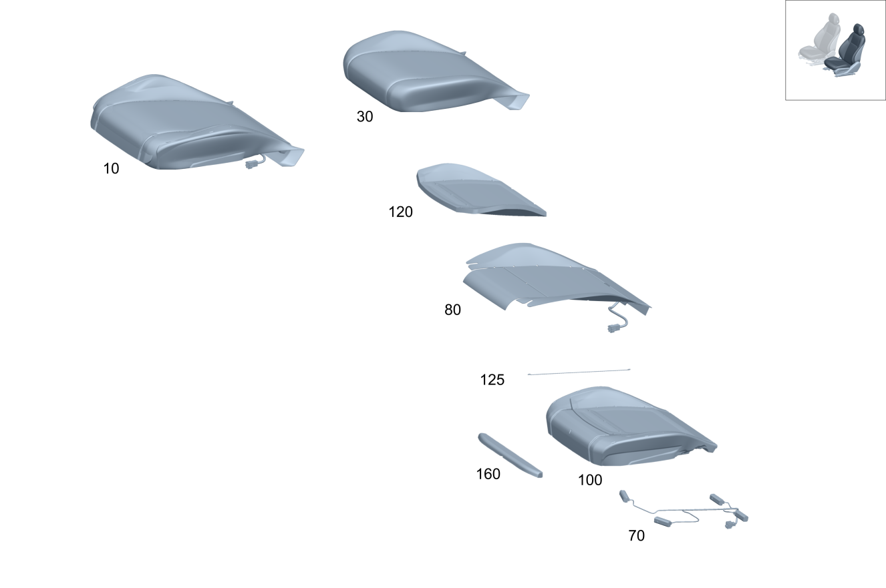

| № | Артикул | Название | Кол. | Примечание | Ограничение |
|---|---|---|---|---|---|
| 10 | A 167 910 71 09 | Подушка сиденья водителя | 1 | Подушка переднего сиденья слева Рулевое управление: Вправо | 960A+(275/241)+873 |
| 10 | A 167 910 73 09 | Подушка сиденья водителя | 1 | Подушка переднего сиденья слева Рулевое управление: Вправо | 960A+(275/241)+902 |
| 10 | A 167 910 75 09 | Подушка сиденья водителя | 1 | Подушка переднего сиденья слева Рулевое управление: Вправо | 960A+(275/241)+401 |
| 10 | A 167 910 77 09 | Подушка сиденья водителя | 1 | Подушка переднего сиденья слева Рулевое управление: Вправо | 960A+(275/241)+401+902 |
| 10 | A 167 910 79 09 | Подушка сиденья водителя (FAHRERKISSEN) | 1 | Подушка переднего сиденья слева Рулевое управление: Вправо | 960A+(275/241)+401+902+399 |
| 10 | A 167 910 79 05 | Подушка сиденья водителя (FAHRERKISSEN) | 1 | Подушка переднего сиденья слева PREMIUM Рулевое управление: Вправо | 110A+(U10/U10+873)+(809/800) |
| 10 | A 167 910 87 13 | Подушка сиденья водителя (FAHRERKISSEN) | 1 | Подушка переднего сиденья слева Рулевое управление: Вправо | 110A+(U10/U10+873)+(802+052/803/804/805/806) |
| 10 | A 167 910 89 06 | Подушка сиденья водителя | 1 | Подушка переднего сиденья слева PREMIUM Рулевое управление: Вправо | 110A+902+U10+(809/800) |
| 10 | A 167 910 97 08 | Подушка сиденья водителя | 1 | Подушка переднего сиденья слева PREMIUM Рулевое управление: Вправо [414] СТАРУЮ ДЕТАЛЬ УСТАНАВЛИВАТЬ БОЛЬШЕ НЕ РАЗРЕШАЕТСЯ | 110A+902+U10+(801/802+-052) |
| 10 | A 167 910 69 14 | Подушка сиденья водителя | 1 | Подушка переднего сиденья слева PREMIUM Рулевое управление: Вправо | 110A+902+U10+(801/802+-052) |
| 10 | A 167 910 89 13 | Подушка сиденья водителя | 1 | Подушка переднего сиденья слева Рулевое управление: Вправо | 110A+902+U10+(802+052/803/804/805/806) |
| 10 | A 167 910 81 05 | Подушка сиденья водителя | 1 | Подушка переднего сиденья слева PREMIUM Рулевое управление: Вправо | 110A+401+U10+(809/800) |
| 10 | A 167 910 01 09 | Подушка сиденья водителя | 1 | Подушка переднего сиденья слева PREMIUM Рулевое управление: Вправо [414] СТАРУЮ ДЕТАЛЬ УСТАНАВЛИВАТЬ БОЛЬШЕ НЕ РАЗРЕШАЕТСЯ | 110A+401+U10+(801/802+-052) |
| 10 | A 167 910 91 14 | Подушка сиденья водителя | 1 | Подушка переднего сиденья слева PREMIUM Рулевое управление: Вправо | 110A+401+U10+(801/802+-052) |
| 10 | A 167 910 19 14 | Подушка сиденья водителя | 1 | Подушка переднего сиденья слева Рулевое управление: Вправо | 110A+401+U10+(802+052/803/804/805/806) |
| 10 | A 167 910 91 06 | Подушка сиденья водителя | 1 | Подушка переднего сиденья слева PREMIUM Рулевое управление: Вправо | 110A+902+401+U10+(809/800) |
| 10 | A 167 910 03 09 | Подушка сиденья водителя | 1 | Подушка переднего сиденья слева PREMIUM Рулевое управление: Вправо [414] СТАРУЮ ДЕТАЛЬ УСТАНАВЛИВАТЬ БОЛЬШЕ НЕ РАЗРЕШАЕТСЯ | 110A+902+401+U10+(801/802+-052) |
| 10 | A 167 910 89 14 | Подушка сиденья водителя | 1 | Подушка переднего сиденья слева PREMIUM Рулевое управление: Вправо | 110A+902+401+U10+(801/802+-052) |
| 10 | A 167 910 21 14 | Подушка сиденья водителя | 1 | Подушка переднего сиденья слева Рулевое управление: Вправо | 110A+902+401+U10+(802+052/803/804/805/806) |
| 10 | A 167 910 83 05 | Подушка сиденья водителя (FAHRERKISSEN) | 1 | Подушка переднего сиденья слева PREMIUM Рулевое управление: Вправо | 110A+241+(U10/U10+873)+(809/800) |
| 10 | A 167 910 91 13 | Подушка сиденья водителя (FAHRERKISSEN) | 1 | Подушка переднего сиденья слева Рулевое управление: Вправо | 110A+241+(U10/U10+873)+(802+052/803/804/805/806) |
| 10 | A 167 910 93 06 | Подушка сиденья водителя | 1 | Подушка переднего сиденья слева PREMIUM Рулевое управление: Вправо | 110A+241+902+U10+(809/800) |
| 10 | A 167 910 07 09 | Подушка сиденья водителя | 1 | Подушка переднего сиденья слева PREMIUM Рулевое управление: Вправо [414] СТАРУЮ ДЕТАЛЬ УСТАНАВЛИВАТЬ БОЛЬШЕ НЕ РАЗРЕШАЕТСЯ | 110A+241+902+U10+(801/802+-052) |
| 10 | A 167 910 81 14 | Подушка сиденья водителя | 1 | Подушка переднего сиденья слева PREMIUM Рулевое управление: Вправо | 110A+241+902+U10+(801/802+-052) |
| 10 | A 167 910 93 13 | Подушка сиденья водителя | 1 | Подушка переднего сиденья слева Рулевое управление: Вправо | 110A+241+902+U10+(802+052/803/804/805/806) |
| 10 | A 167 910 85 05 | Подушка сиденья водителя | 1 | Подушка переднего сиденья слева PREMIUM Рулевое управление: Вправо | 110A+241+401+U10+(809/800) |
| 10 | A 167 910 09 09 | Подушка сиденья водителя | 1 | Подушка переднего сиденья слева PREMIUM Рулевое управление: Вправо [414] СТАРУЮ ДЕТАЛЬ УСТАНАВЛИВАТЬ БОЛЬШЕ НЕ РАЗРЕШАЕТСЯ | 110A+241+401+U10+(801/802+-052) |
| 10 | A 167 910 87 14 | Подушка сиденья водителя | 1 | Подушка переднего сиденья слева PREMIUM Рулевое управление: Вправо | 110A+241+401+U10+(801/802+-052) |
| 10 | A 167 910 23 14 | Подушка сиденья водителя | 1 | Подушка переднего сиденья слева Рулевое управление: Вправо | 110A+241+401+U10+(802+052/803/804/805/806) |
| 10 | A 167 910 95 06 | Подушка сиденья водителя | 1 | Подушка переднего сиденья слева PREMIUM Рулевое управление: Вправо | 110A+241+902+401+U10+(809/800) |
| 10 | A 167 910 11 09 | Подушка сиденья водителя | 1 | Подушка переднего сиденья слева PREMIUM Рулевое управление: Вправо [414] СТАРУЮ ДЕТАЛЬ УСТАНАВЛИВАТЬ БОЛЬШЕ НЕ РАЗРЕШАЕТСЯ | 110A+241+902+401+U10+(801/802+-052) |
| 10 | A 167 910 85 14 | Подушка сиденья водителя | 1 | Подушка переднего сиденья слева PREMIUM Рулевое управление: Вправо | 110A+241+902+401+U10+(801/802+-052) |
| 10 | A 167 910 25 14 | Подушка сиденья водителя | 1 | Подушка переднего сиденья слева Рулевое управление: Вправо | 110A+241+902+401+U10+(802+052/803/804/805/806) |
| 10 | A 167 910 87 05 | Подушка сиденья водителя (FAHRERKISSEN) | 1 | Подушка переднего сиденья слева Рулевое управление: Вправо | 200A+(241/254)+(U10/U10+873)+(809/800)+-4B4 |
| 10 | A 167 910 21 09 | Подушка сиденья водителя (FAHRERKISSEN) | 1 | Подушка переднего сиденья слева Рулевое управление: Вправо | 200A+(241/254)+(U10/U10+873)+(801/802/803/804/805/806)+-4B4 |
| 10 | A 167 910 97 06 | Подушка сиденья водителя | 1 | Подушка переднего сиденья слева Рулевое управление: Вправо | 200A+(241/254)+902+U10+(809/800)+-4B4 |
| 10 | A 167 910 23 09 | Подушка сиденья водителя | 1 | Подушка переднего сиденья слева Рулевое управление: Вправо | 200A+(241/254)+902+U10+(801/802/803/804/805/806)+-4B4 |
| 10 | A 167 910 93 05 | Подушка сиденья водителя (FAHRERKISSEN) | 1 | Подушка переднего сиденья слева Рулевое управление: Вправо | 200A+(241/254)+401+U10+(809/800)+-4B4 |
| 10 | A 167 910 25 09 | Подушка сиденья водителя | 1 | Подушка переднего сиденья слева Рулевое управление: Вправо | 200A+(241/254)+401+U10+(801/802/803/804/805/806)+-4B4 |
| 10 | A 167 910 03 07 | FRONT SEAT CUSHION (FAHRERKISSEN) | 1 | Подушка переднего сиденья слева Рулевое управление: Вправо | 200A+(241/254)+399+401+902+U10+(809/800)+-4B4 |
| 10 | A 167 910 73 13 | Подушка сиденья водителя (FAHRERKISSEN) | 1 | Подушка переднего сиденья слева Рулевое управление: Вправо | 200A+(241/254)+399+401+902+U10+(801/802/803/804/805/806)+-4B4 |
| 10 | A 167 910 05 07 | Подушка сиденья водителя (FAHRERKISSEN) | 1 | Подушка переднего сиденья слева Рулевое управление: Вправо | 200A+(241/254)+902+401+U10+(809/800)+-4B4 |
| 10 | A 167 910 27 09 | Подушка сиденья водителя | 1 | Подушка переднего сиденья слева Рулевое управление: Вправо | 200A+(241/254)+902+401+U10+(801/802/803/804/805/806)+-4B4 |
| 10 | A 167 910 89 05 | Подушка сиденья водителя (FAHRERKISSEN) | 1 | Подушка переднего сиденья слева Рулевое управление: Вправо | 200A+(205A/215A)+(241/254)+(U10/U10+873)+(809/800)+-4B4 |
| 10 | A 167 910 29 09 | Подушка сиденья водителя (FAHRERKISSEN) | 1 | Подушка переднего сиденья слева Рулевое управление: Вправо | 200A+(215A/225A)+(241/254)+(U10/U10+873)+(801/802/803/804/805/806)+-4B4 |
| 10 | A 167 910 01 07 | Подушка сиденья водителя (FAHRERKISSEN) | 1 | Подушка переднего сиденья слева Рулевое управление: Вправо | 200A+(205A/215A)+(241/254)+902+U10+(809/800)+-4B4 |
| 10 | A 167 910 31 09 | Подушка сиденья водителя | 1 | Подушка переднего сиденья слева Рулевое управление: Вправо | 200A+(215A/225A)+(241/254)+902+U10+(801/802/803/804/805/806)+-4B4 |
| 10 | A 167 910 95 05 | Подушка сиденья водителя (FAHRERKISSEN) | 1 | Подушка переднего сиденья слева Рулевое управление: Вправо | 200A+(205A/215A)+(241/254)+401+U10+(809/800)+-4B4 |
| 10 | A 167 910 33 09 | Подушка сиденья водителя (FAHRERKISSEN) | 1 | Подушка переднего сиденья слева Рулевое управление: Вправо | 200A+(215A/225A)+(241/254)+401+U10+(801/802/803/804/805/806)+-4B4 |
| 10 | A 167 910 07 07 | Подушка сиденья водителя (FAHRERKISSEN) | 1 | Подушка переднего сиденья слева Рулевое управление: Вправо | 200A+(205A/215A)+(241/254)+902+401+U10+(809/800)+-4B4 |
| 10 | A 167 910 35 09 | Подушка сиденья водителя | 1 | Подушка переднего сиденья слева Рулевое управление: Вправо | 200A+(215A/225A)+(241/254)+902+401+U10+(801/802/803/804/805/806)+-4B4 |
| 10 | A 167 910 09 07 | FRONT SEAT CUSHION (FAHRERKISSEN) | 1 | Подушка переднего сиденья слева Рулевое управление: Вправо | 200A+(205A/215A)+(241/254)+399+401+902+U10+(809/800)+-4B4 |
| 10 | A 167 910 75 13 | Подушка сиденья водителя (FAHRERKISSEN) | 1 | Подушка переднего сиденья слева Рулевое управление: Вправо | 200A+(215A/225A)+(241/254)+399+401+902+U10+(801/802/803/804/805/806)+-4B4 |
| 10 | A 167 910 21 09 | Подушка сиденья водителя (FAHRERKISSEN) | 1 | Подушка переднего сиденья слева Рулевое управление: Вправо | 200A+4B4+(U10/U10+873)+(809/800/801/802/803/804/805/806) |
| 10 | A 167 910 23 09 | Подушка сиденья водителя | 1 | Подушка переднего сиденья слева Рулевое управление: Вправо | 200A+4B4+902+U10+(809/800/801/802/803/804/805/806) |
| 10 | A 167 910 25 09 | Подушка сиденья водителя | 1 | Подушка переднего сиденья слева Рулевое управление: Вправо | 200A+4B4+401+U10+(809/800/801/802/803/804/805/806) |
| 10 | A 167 910 27 09 | Подушка сиденья водителя | 1 | Подушка переднего сиденья слева Рулевое управление: Вправо | 200A+4B4+902+401+U10+(809/800/801/802/803/804/805/806) |
| 10 | A 167 910 29 09 | Подушка сиденья водителя (FAHRERKISSEN) | 1 | Подушка переднего сиденья слева Рулевое управление: Вправо | 200A+(215A/225A)+4B4+(U10/U10+873)+(809/800/801/802/803/804/805/806) |
| 10 | A 167 910 31 09 | Подушка сиденья водителя | 1 | Подушка переднего сиденья слева Рулевое управление: Вправо | 200A+(215A/225A)+4B4+902+U10+(809/800/801/802/803/804/805/806) |
| 10 | A 167 910 33 09 | Подушка сиденья водителя (FAHRERKISSEN) | 1 | Подушка переднего сиденья слева Рулевое управление: Вправо | 200A+(215A/225A)+4B4+401+U10+(809/800/801/802/803/804/805/806) |
| 10 | A 167 910 35 09 | Подушка сиденья водителя | 1 | Подушка переднего сиденья слева Рулевое управление: Вправо | 200A+(215A/225A)+4B4+902+401+U10+(809/800/801/802/803/804/805/806) |
| 10 | A 167 910 73 05 | Подушка сиденья водителя | 1 | Подушка переднего сиденья слева Рулевое управление: Вправо | 310A+(U10/U10+873)+(809/800) |
| 10 | A 167 910 87 06 | Подушка сиденья водителя | 1 | Подушка переднего сиденья слева Рулевое управление: Вправо | 500A+241+(U10/U10+902)+(809/800) |
| 10 | A 167 910 39 09 | Подушка сиденья водителя | 1 | Подушка переднего сиденья слева Рулевое управление: Вправо | 500A+241+U10+902+(801/802/803/804/805/806) |
| 10 | A 167 910 91 05 | FRONT SEAT CUSHION (FAHRERKISSEN) | 1 | Подушка переднего сиденья слева Рулевое управление: Вправо | 500A+399+241+401+(U10/U10+902)+(809/800) |
| 10 | A 167 910 77 13 | Подушка сиденья водителя (FAHRERKISSEN) | 1 | Подушка переднего сиденья слева Рулевое управление: Вправо | 500A+399+241+401+(U10/U10+902)+(801/802/803/804/805/806) |
| 10 | A 167 910 97 05 | FRONT SEAT CUSHION | 1 | Подушка переднего сиденья слева Рулевое управление: Вправо | 500A+401+241+(U10/U10+902)+(809/800) |
| 10 | A 167 910 31 18 | Подушка сиденья водителя | 1 | Подушка переднего сиденья слева Рулевое управление: Вправо | 500A+401+241+U10+902+(801/802/803/804/805/806) |
| 10 | A 167 910 05 06 | Подушка сиденья водителя (FAHRERKISSEN) | 1 | Подушка переднего сиденья слева Рулевое управление: Вправо | 600A+873+U10+(809/800+-050) |
| 10 | A 167 910 15 07 | Подушка сиденья водителя | 1 | Подушка переднего сиденья слева Рулевое управление: Вправо | 600A+902+U10+(809/800+-050) |
| 10 | A 167 910 09 06 | Подушка сиденья водителя (FAHRERKISSEN) | 1 | Подушка переднего сиденья слева Рулевое управление: Вправо | 600A+241+873+U10+(809/800+-050) |
| 10 | A 167 910 19 07 | Подушка сиденья водителя | 1 | Подушка переднего сиденья слева Рулевое управление: Вправо | 600A+241+902+U10+(809/800+-050) |
| 10 | A 167 910 07 06 | Подушка сиденья водителя | 1 | Подушка переднего сиденья слева Рулевое управление: Вправо | 600A+(U10+(809/800)/U10+873+800+050) |
| 10 | A 167 910 71 10 | Подушка сиденья водителя (FAHRERKISSEN) | 1 | Подушка переднего сиденья слева Рулевое управление: Вправо | 600A+(U10/U10+873)+(801/802+-052) |
| 10 | A 167 910 27 14 | Подушка сиденья водителя (FAHRERKISSEN) | 1 | Подушка переднего сиденья слева Рулевое управление: Вправо | 600A+(U10/U10+873)+-(809/800/801/802+-052) |
| 10 | A 167 910 53 19 | Подушка сиденья водителя | 1 | Подушка переднего сиденья слева Рулевое управление: Вправо | 600A+(U10/U10+873)+-(809/800/801/802+-052) |
| 10 | A 167 910 11 06 | Подушка сиденья водителя (FAHRERKISSEN) | 1 | Подушка переднего сиденья слева Рулевое управление: Вправо | 600A+902+U10+(800+050) |
| 10 | A 167 910 73 10 | Подушка сиденья водителя | 1 | Подушка переднего сиденья слева Рулевое управление: Вправо | 600A+902+U10+(801/802+-052) |
| 10 | A 167 910 29 14 | Подушка сиденья водителя | 1 | Подушка переднего сиденья слева Рулевое управление: Вправо | 600A+902+U10+-(809/800/801/802+-052) |
| 10 | A 167 910 55 19 | Подушка сиденья водителя | 1 | Подушка переднего сиденья слева Рулевое управление: Вправо | 600A+902+U10+-(809/800/801/802+-052) |
| 10 | A 167 910 15 06 | Подушка сиденья водителя (FAHRERKISSEN) | 1 | Подушка переднего сиденья слева Рулевое управление: Вправо | 600A+241+(U10+(809/800)/U10+873+800+050) |
| 10 | A 167 910 75 10 | Подушка сиденья водителя (FAHRERKISSEN) | 1 | Подушка переднего сиденья слева Рулевое управление: Вправо | 600A+241+(U10/U10+873)+(801/802+-052) |
| 10 | A 167 910 31 14 | Подушка сиденья водителя (FAHRERKISSEN) | 1 | Подушка переднего сиденья слева Рулевое управление: Вправо | 600A+241+(U10/U10+873)+-(809/800/801/802+-052) |
| 10 | A 167 910 57 19 | Подушка сиденья водителя (FAHRERKISSEN) | 1 | Подушка переднего сиденья слева Рулевое управление: Вправо | 600A+241+(U10/U10+873)+-(809/800/801/802+-052) |
| 10 | A 167 910 17 07 | Подушка сиденья водителя | 1 | Подушка переднего сиденья слева Рулевое управление: Вправо | 600A+241+902+U10+(800+050) |
| 10 | A 167 910 77 10 | Подушка сиденья водителя | 1 | Подушка переднего сиденья слева Рулевое управление: Вправо | 600A+241+902+U10+(801/802+-052) |
| 10 | A 167 910 33 14 | Подушка сиденья водителя | 1 | Подушка переднего сиденья слева Рулевое управление: Вправо | 600A+241+902+U10+-(809/800/801/802+-052) |
| 10 | A 167 910 59 19 | Подушка сиденья водителя | 1 | Подушка переднего сиденья слева Рулевое управление: Вправо | 600A+241+902+U10+-(809/800/801/802+-052) |
| 10 | A 167 910 13 06 | Подушка сиденья водителя (FAHRERKISSEN) | 1 | Подушка переднего сиденья слева Рулевое управление: Вправо | 800A+(241/254)+873+U10+(809/800+-050)+-4B4 |
| 10 | A 167 910 13 06 | Подушка сиденья водителя (FAHRERKISSEN) | 1 | Подушка переднего сиденья слева Рулевое управление: Вправо | 800A+254+(U10+(809/800)/U10+873+800+050)+-4B4 |
| 10 | A 167 910 49 09 | Подушка сиденья водителя (FAHRERKISSEN) | 1 | Подушка переднего сиденья слева Рулевое управление: Вправо | 800A+254+(U10/U10+873)+-(4B4/809/800) |
| 10 | A 167 910 23 07 | Подушка сиденья водителя | 1 | Подушка переднего сиденья слева Рулевое управление: Вправо | 800A+(241/254)+902+U10+(809/800+-050)+-4B4 |
| 10 | A 167 910 23 07 | Подушка сиденья водителя | 1 | Подушка переднего сиденья слева Рулевое управление: Вправо | 800A+254+902+U10+800+050+-4B4 |
| 10 | A 167 910 51 09 | Подушка сиденья водителя | 1 | Подушка переднего сиденья слева Рулевое управление: Вправо | 800A+254+902+U10+-(4B4/809/800) |
| 10 | A 167 910 21 06 | Подушка сиденья водителя (FAHRERKISSEN) | 1 | Подушка переднего сиденья слева Рулевое управление: Вправо | 800A+(241/254)+401+U10+(809/800+-050)+-4B4 |
| 10 | A 167 910 21 06 | Подушка сиденья водителя (FAHRERKISSEN) | 1 | Подушка переднего сиденья слева Рулевое управление: Вправо | 800A+254+401+U10+800+050+-4B4 |
| 10 | A 167 910 53 09 | Подушка сиденья водителя (FAHRERKISSEN) | 1 | Подушка переднего сиденья слева Рулевое управление: Вправо | 800A+254+401+U10+-(4B4/809/800) |
| 10 | A 167 910 31 07 | Подушка сиденья водителя | 1 | Подушка переднего сиденья слева Рулевое управление: Вправо | 800A+(241/254)+902+401+U10+(809/800+-050)+-4B4 |
| 10 | A 167 910 31 07 | Подушка сиденья водителя | 1 | Подушка переднего сиденья слева Рулевое управление: Вправо | 800A+254+902+401+U10+800+050+-4B4 |
| 10 | A 167 910 55 09 | Подушка сиденья водителя | 1 | Подушка переднего сиденья слева Рулевое управление: Вправо | 800A+254+902+401+U10+-(4B4/809/800) |
| 10 | A 167 910 17 06 | Подушка сиденья водителя (FAHRERKISSEN) | 1 | Подушка переднего сиденья слева Рулевое управление: Вправо | 800A+885A+(241/254)+873+U10+(809/800+-050)+-4B4 |
| 10 | A 167 910 17 06 | Подушка сиденья водителя (FAHRERKISSEN) | 1 | Подушка переднего сиденья слева Рулевое управление: Вправо | 800A+885A+254+(U10+(809/800)/U10+873+800+050)+-4B4 |
| 10 | A 167 910 57 09 | Подушка сиденья водителя | 1 | Подушка переднего сиденья слева Рулевое управление: Вправо | 800A+885A+254+(U10/U10+873)+-(4B4/809/800) |
| 10 | A 167 910 27 07 | Подушка сиденья водителя | 1 | Подушка переднего сиденья слева Рулевое управление: Вправо | 800A+885A+(241/254)+902+U10+(809/800+-050)+-4B4 |
| 10 | A 167 910 27 07 | Подушка сиденья водителя | 1 | Подушка переднего сиденья слева Рулевое управление: Вправо | 800A+885A+254+902+U10+800+050+-4B4 |
| 10 | A 167 910 59 09 | Подушка сиденья водителя | 1 | Подушка переднего сиденья слева Рулевое управление: Вправо | 800A+885A+254+902+U10+-(4B4/809/800) |
| 10 | A 167 910 83 06 | Подушка сиденья водителя (FAHRERKISSEN) | 1 | Подушка переднего сиденья слева Рулевое управление: Вправо | 800A+885A+(241/254)+401+U10+(809/800+-050)+-4B4 |
| 10 | A 167 910 83 06 | Подушка сиденья водителя (FAHRERKISSEN) | 1 | Подушка переднего сиденья слева Рулевое управление: Вправо | 800A+885A+254+401+U10+800+050+-4B4 |
| 10 | A 167 910 61 09 | Подушка сиденья водителя | 1 | Подушка переднего сиденья слева Рулевое управление: Вправо | 800A+885A+254+401+U10+-(4B4/809/800) |
| 10 | A 167 910 35 07 | Подушка сиденья водителя | 1 | Подушка переднего сиденья слева Рулевое управление: Вправо | 800A+885A+(241/254)+902+401+U10+(809/800+-050)+-4B4 |
| 10 | A 167 910 35 07 | Подушка сиденья водителя | 1 | Подушка переднего сиденья слева Рулевое управление: Вправо | 800A+885A+254+902+401+U10+800+050+-4B4 |
| 10 | A 167 910 63 09 | Подушка сиденья водителя | 1 | Подушка переднего сиденья слева Рулевое управление: Вправо | 800A+885A+254+902+401+U10+-(4B4/809/800) |
| 10 | A 167 910 19 06 | Подушка сиденья водителя (FAHRERKISSEN) | 1 | Подушка переднего сиденья слева Рулевое управление: Вправо | 800A+241+(U10+(809/800)/U10+873+800+050)+-4B4 |
| 10 | A 167 910 79 10 | Подушка сиденья водителя (FAHRERKISSEN) | 1 | Подушка переднего сиденья слева Рулевое управление: Вправо | 800A+241+(U10/U10+873)+-(4B4/809/800) |
| 10 | A 167 910 21 07 | Подушка сиденья водителя | 1 | Подушка переднего сиденья слева Рулевое управление: Вправо | 800A+241+902+U10+800+050+-4B4 |
| 10 | A 167 910 81 10 | Подушка сиденья водителя | 1 | Подушка переднего сиденья слева Рулевое управление: Вправо | 800A+241+902+U10+-(4B4/809/800) |
| 10 | A 167 910 25 07 | Подушка сиденья водителя (FAHRERKISSEN) | 1 | Подушка переднего сиденья слева Рулевое управление: Вправо | 800A+241+401+U10+800+050+-4B4 |
| 10 | A 167 910 83 10 | Подушка сиденья водителя (FAHRERKISSEN) | 1 | Подушка переднего сиденья слева Рулевое управление: Вправо | 800A+241+401+U10+-(4B4/809/800) |
| 10 | A 167 910 29 07 | Подушка сиденья водителя (FAHRERKISSEN) | 1 | Подушка переднего сиденья слева Рулевое управление: Вправо | 800A+241+902+401+U10+800+050+-4B4 |
| 10 | A 167 910 85 10 | Подушка сиденья водителя | 1 | Подушка переднего сиденья слева Рулевое управление: Вправо | 800A+241+902+401+U10+-(4B4/809/800) |
| 10 | A 167 910 33 07 | Подушка сиденья водителя (FAHRERKISSEN) | 1 | Подушка переднего сиденья слева Рулевое управление: Вправо | 800A+885A+241+(U10+(809/800)/U10+873+800+050)+-4B4 |
| 10 | A 167 910 87 10 | Подушка сиденья водителя | 1 | Подушка переднего сиденья слева Рулевое управление: Вправо | 800A+885A+241+(U10/U10+873)+-(4B4/809/800) |
| 10 | A 167 910 37 07 | Подушка сиденья водителя (FAHRERKISSEN) | 1 | Подушка переднего сиденья слева Рулевое управление: Вправо | 800A+885A+241+902+U10+800+050+-4B4 |
| 10 | A 167 910 89 10 | Подушка сиденья водителя | 1 | Подушка переднего сиденья слева Рулевое управление: Вправо | 800A+885A+241+902+U10+-(4B4/809/800) |
| 10 | A 167 910 81 06 | Подушка сиденья водителя (FAHRERKISSEN) | 1 | Подушка переднего сиденья слева Рулевое управление: Вправо | 800A+885A+241+401+U10+800+050+-4B4 |
| 10 | A 167 910 91 10 | Подушка сиденья водителя | 1 | Подушка переднего сиденья слева Рулевое управление: Вправо | 800A+885A+241+401+U10+-(4B4/809/800) |
| 10 | A 167 910 85 06 | Подушка сиденья водителя (FAHRERKISSEN) | 1 | Подушка переднего сиденья слева Рулевое управление: Вправо | 800A+885A+241+902+401+U10+800+050+-4B4 |
| 10 | A 167 910 93 10 | Подушка сиденья водителя | 1 | Подушка переднего сиденья слева Рулевое управление: Вправо | 800A+885A+241+902+401+U10+-(4B4/809/800) |
| 10 | A 167 910 79 10 | Подушка сиденья водителя (FAHRERKISSEN) | 1 | Подушка переднего сиденья слева Рулевое управление: Вправо | 800A+4B4+(U10/U10+873)+(809/800/801/802/803+-053) |
| 10 | A 167 910 81 10 | Подушка сиденья водителя | 1 | Подушка переднего сиденья слева Рулевое управление: Вправо | 800A+4B4+902+U10+(809/800/801/802/803+-053) |
| 10 | A 167 910 83 10 | Подушка сиденья водителя (FAHRERKISSEN) | 1 | Подушка переднего сиденья слева Рулевое управление: Вправо | 800A+4B4+401+U10+(809/800/801/802/803+-053) |
| 10 | A 167 910 85 10 | Подушка сиденья водителя | 1 | Подушка переднего сиденья слева Рулевое управление: Вправо | 800A+4B4+902+401+U10+(809/800/801/802/803+-053) |
| 10 | A 167 910 87 10 | Подушка сиденья водителя | 1 | Подушка переднего сиденья слева Рулевое управление: Вправо | 800A+885A+4B4+(U10/U10+873)+(809/800/801/802/803+-053) |
| 10 | A 167 910 89 10 | Подушка сиденья водителя | 1 | Подушка переднего сиденья слева Рулевое управление: Вправо | 800A+885A+4B4+902+U10+(809/800/801/802/803+-053) |
| 10 | A 167 910 91 10 | Подушка сиденья водителя | 1 | Подушка переднего сиденья слева Рулевое управление: Вправо | 800A+885A+4B4+401+U10+(809/800/801/802/803+-053) |
| 10 | A 167 910 93 10 | Подушка сиденья водителя | 1 | Подушка переднего сиденья слева Рулевое управление: Вправо | 800A+885A+4B4+902+401+U10+(809/800/801/802/803+-053) |
| 10 | A 167 910 99 08 | Подушка сиденья водителя | 1 | Подушка переднего сиденья слева Рулевое управление: Вправо | 650A+902+(809/800) |
| 10 | A 167 910 79 07 | Подушка сиденья водителя | 1 | Подушка переднего сиденья слева Рулевое управление: Вправо | 650A+873+(809/800) |
| 10 | A 167 910 17 08 | Подушка сиденья водителя | 1 | Подушка переднего сиденья слева Рулевое управление: Вправо | 650A+(809/800) |
| 10 | A 167 910 81 07 | Подушка сиденья водителя | 1 | Подушка переднего сиденья слева Рулевое управление: Вправо | 650A+(275/241)+873+(809/800) |
| 10 | A 167 910 15 08 | Подушка сиденья водителя | 1 | Подушка переднего сиденья слева Рулевое управление: Вправо | 650A+(275/241)+(809/800) |
| 10 | A 167 910 19 08 | Подушка сиденья водителя | 1 | Подушка переднего сиденья слева Рулевое управление: Вправо | 650A+(275/241)+902+(809/800) |
| 10 | A 167 910 65 09 | Подушка сиденья водителя (FAHRERKISSEN) | 1 | Подушка переднего сиденья слева Рулевое управление: Вправо | 650A+(275/241)+873+(801/802+-052) |
| 10 | A 167 910 67 09 | Подушка сиденья водителя | 1 | Подушка переднего сиденья слева Рулевое управление: Вправо | 650A+(275/241)+(801/802+-052) |
| 10 | A 167 910 69 09 | Подушка сиденья водителя | 1 | Подушка переднего сиденья слева Рулевое управление: Вправо | 650A+(275/241)+902+(801/802+-052) |
| 10 | A 167 910 00 09 | Подушка сиденья водителя | 1 | Подушка переднего сиденья слева Рулевое управление: Вправо | 650A+902+(801/802+-052) |
| 10 | A 167 910 99 09 | Подушка сиденья водителя | 1 | Подушка переднего сиденья слева Рулевое управление: Вправо | 650A+873+(801/802+-052) |
| 10 | A 167 910 00 10 | Подушка сиденья водителя | 1 | Подушка переднего сиденья слева Рулевое управление: Вправо | 650A+(801/802+-052) |
| 10 | A 167 910 39 14 | Подушка сиденья водителя | 1 | Подушка переднего сиденья слева Рулевое управление: Вправо | 650A+(275/241)+873+-(809/800/801/802+-052) |
| 10 | A 167 910 41 14 | Подушка сиденья водителя | 1 | Подушка переднего сиденья слева Рулевое управление: Вправо | 650A+(275/241)+-(809/800/801/802+-052) |
| 10 | A 167 910 43 14 | Подушка сиденья водителя | 1 | Подушка переднего сиденья слева Рулевое управление: Вправо | 650A+(275/241)+902+-(809/800/801/802+-052) |
| 10 | A 167 910 45 14 | Подушка сиденья водителя | 1 | Подушка переднего сиденья слева Рулевое управление: Вправо | 650A+902+-(809/800/801/802+-052) |
| 10 | A 167 910 47 14 | Подушка сиденья водителя | 1 | Подушка переднего сиденья слева Рулевое управление: Вправо | 650A+873+-(809/800/801/802+-052) |
| 10 | A 167 910 49 14 | Подушка сиденья водителя | 1 | Подушка переднего сиденья слева Рулевое управление: Вправо | 650A+-(809/800/801/802+-052) |
| 10 | A 167 910 83 07 | Подушка сиденья водителя | 1 | Подушка переднего сиденья слева Рулевое управление: Вправо | 560A+(275/241)+873+(809/800) |
| 10 | A 167 910 85 07 | Подушка сиденья водителя | 1 | Подушка переднего сиденья слева Рулевое управление: Вправо | 560A+(275/241)+902+(809/800) |
| 10 | A 167 910 87 07 | Подушка сиденья водителя | 1 | Подушка переднего сиденья слева Рулевое управление: Вправо | 560A+(275/241)+401+(809/800) |
| 10 | A 167 910 89 07 | Подушка сиденья водителя | 1 | Подушка переднего сиденья слева Рулевое управление: Вправо | 560A+(275/241)+401+902+(809/800) |
| 10 | A 167 910 93 07 | Подушка сиденья водителя | 1 | Подушка переднего сиденья слева Рулевое управление: Вправо | 560A+(275/241)+401+902+399+(809/800) |
| 10 | A 167 910 71 09 | Подушка сиденья водителя | 1 | Подушка переднего сиденья слева Рулевое управление: Вправо | 560A+(275/241)+873+-(809/800) |
| 10 | A 167 910 73 09 | Подушка сиденья водителя | 1 | Подушка переднего сиденья слева Рулевое управление: Вправо | 560A+(275/241)+902+-(809/800) |
| 10 | A 167 910 75 09 | Подушка сиденья водителя | 1 | Подушка переднего сиденья слева Рулевое управление: Вправо | 560A+(275/241)+401+-(809/800) |
| 10 | A 167 910 77 09 | Подушка сиденья водителя | 1 | Подушка переднего сиденья слева Рулевое управление: Вправо | 560A+(275/241)+401+902+-(809/800) |
| 10 | A 167 910 79 09 | Подушка сиденья водителя (FAHRERKISSEN) | 1 | Подушка переднего сиденья слева Рулевое управление: Вправо | 560A+(275/241)+401+902+399+-(809/800) |
| 10 | A 167 910 95 07 | Подушка сиденья водителя (FAHRERKISSEN) | 1 | Подушка переднего сиденья слева Рулевое управление: Вправо | (850A/550A)+(275/241/254)+873+(809/800) |
| 10 | A 167 910 97 07 | Подушка сиденья водителя | 1 | Подушка переднего сиденья слева Рулевое управление: Вправо | (850A/550A)+(275/241/254)+902+(809/800) |
| 10 | A 167 910 01 08 | Подушка сиденья водителя (FAHRERKISSEN) | 1 | Подушка переднего сиденья слева Рулевое управление: Вправо | (850A/550A)+(275/241/254)+401+(809/800) |
| 10 | A 167 910 03 08 | Подушка сиденья водителя | 1 | Подушка переднего сиденья слева Рулевое управление: Вправо | (850A/550A)+(275/241/254)+401+902+(809/800) |
| 10 | A 167 910 81 09 | Подушка сиденья водителя (FAHRERKISSEN) | 1 | Подушка переднего сиденья слева Рулевое управление: Вправо | (850A/550A)+(275/241/254)+873+-(809/800) |
| 10 | A 167 910 83 09 | Подушка сиденья водителя | 1 | Подушка переднего сиденья слева Рулевое управление: Вправо | (850A/550A)+(275/241/254)+902+-(809/800) |
| 10 | A 167 910 85 09 | Подушка сиденья водителя (FAHRERKISSEN) | 1 | Подушка переднего сиденья слева Рулевое управление: Вправо | (850A/550A)+(275/241/254)+401+-(809/800) |
| 10 | A 167 910 87 09 | Подушка сиденья водителя | 1 | Подушка переднего сиденья слева Рулевое управление: Вправо | (850A/550A)+(275/241/254)+401+902+-(809/800) |
| 10 | A 167 910 89 09 | Подушка сиденья водителя (FAHRERKISSEN) | 1 | Подушка переднего сиденья слева Рулевое управление: Вправо | (850A/550A)+(275/241/254)+401+902+399+-(809/800) |
| 30 | A 167 910 41 07 | Обивка подушки сиденья (BEZUG FAHRERKISSEN) | 1 | Обивка подушки переднего сиденья слева Рулевое управление: Влево | 310A+(809/800) |
| 30 | A 167 910 41 07 | Обивка подушки сиденья (BEZUG FAHRERKISSEN) | 1 | Обивка подушки переднего сиденья слева Рулевое управление: Вправо | 310A+(809/800)+-U10 |
| 30 | A 167 910 11 00 | Обивка подушки сиденья (BEZUG FAHRERKISSEN) | 1 | Обивка подушки переднего сиденья слева Рулевое управление: Влево | 200A+(275/254)+-4B4 |
| 30 | A 167 910 11 00 | Обивка подушки сиденья (BEZUG FAHRERKISSEN) | 1 | Обивка подушки переднего сиденья слева Рулевое управление: Вправо | 200A+(241/254)+-(U10/4B4) |
| 30 | A 167 910 21 04 | Обивка подушки сиденья (BEZUG FAHRERKISSEN) | 1 | Обивка подушки переднего сиденья слева Рулевое управление: Влево | 200A+(205A/215A/225A)+(275/254)+-4B4 |
| 30 | A 167 910 21 04 | Обивка подушки сиденья (BEZUG FAHRERKISSEN) | 1 | Обивка подушки переднего сиденья слева Рулевое управление: Вправо | 200A+(205A/215A/225A)+(241/254)+-(U10/4B4) |
| 30 | A 167 910 35 01 | Обивка подушки сиденья (BEZUG FAHRERKISSEN) | 1 | Обивка подушки переднего сиденья слева Рулевое управление: Влево | 200A+401+(275/254)+-4B4 |
| 30 | A 167 910 35 01 | Обивка подушки сиденья (BEZUG FAHRERKISSEN) | 1 | Обивка подушки переднего сиденья слева Рулевое управление: Вправо | 200A+401+(241/254)+-(U10/4B4) |
| 30 | A 167 910 23 04 | Обивка подушки сиденья (BEZUG FAHRERKISSEN) | 1 | Обивка подушки переднего сиденья слева Рулевое управление: Влево | 200A+(205A/215A/225A)+401+(275/254)+-4B4 |
| 30 | A 167 910 23 04 | Обивка подушки сиденья (BEZUG FAHRERKISSEN) | 1 | Обивка подушки переднего сиденья слева Рулевое управление: Вправо | 200A+(205A/215A/225A)+401+(241/254)+-(U10/4B4) |
| 30 | A 167 910 51 18 | Обивка подушки сиденья | 1 | Обивка подушки переднего сиденья слева Рулевое управление: Влево | 230A+(275/254)+(807/808/29X)+-4B4 |
| 30 | A 167 910 51 18 | Обивка подушки сиденья | 1 | Обивка подушки переднего сиденья слева Рулевое управление: Вправо | 230A+(241/254)+(807/808/29X)+-(U10/4B4) |
| 30 | A 167 910 53 18 | Обивка подушки сиденья | 1 | Обивка подушки переднего сиденья слева Рулевое управление: Влево | 230A+235A+(275/254)+(807/808/29X)+-4B4 |
| 30 | A 167 910 53 18 | Обивка подушки сиденья | 1 | Обивка подушки переднего сиденья слева Рулевое управление: Вправо | 230A+235A+(241/254)+(807/808/29X)+-(U10/4B4) |
| 30 | A 167 910 55 18 | Обивка подушки сиденья | 1 | Обивка подушки переднего сиденья слева Рулевое управление: Влево | 230A+401+(275/254)+(807/808/29X)+-4B4 |
| 30 | A 167 910 55 18 | Обивка подушки сиденья | 1 | Обивка подушки переднего сиденья слева Рулевое управление: Вправо | 230A+401+(241/254)+(807/808/29X)+-(U10/4B4) |
| 30 | A 167 910 57 18 | Обивка подушки сиденья | 1 | Обивка подушки переднего сиденья слева Рулевое управление: Влево | 230A+235A+401+(275/254)+(807/808/29X)+-4B4 |
| 30 | A 167 910 57 18 | Обивка подушки сиденья | 1 | Обивка подушки переднего сиденья слева Рулевое управление: Вправо | 230A+235A+401+(241/254)+(807/808/29X)+-(U10/4B4) |
| 30 | A 167 910 11 00 | Обивка подушки сиденья (BEZUG FAHRERKISSEN) | 1 | Обивка подушки переднего сиденья слева Рулевое управление: Влево | 200A+4B4+(809/800/801/802/803+-053) |
| 30 | A 167 910 11 00 | Обивка подушки сиденья (BEZUG FAHRERKISSEN) | 1 | Обивка подушки переднего сиденья слева Рулевое управление: Вправо | 200A+4B4+(809/800/801/802/803+-053)+-U10 |
| 30 | A 167 910 21 04 | Обивка подушки сиденья (BEZUG FAHRERKISSEN) | 1 | Обивка подушки переднего сиденья слева Рулевое управление: Влево | 200A+(215A/225A)+4B4+(809/800/801/802/803+-053) |
| 30 | A 167 910 21 04 | Обивка подушки сиденья (BEZUG FAHRERKISSEN) | 1 | Обивка подушки переднего сиденья слева Рулевое управление: Вправо | 200A+(215A/225A)+4B4+(809/800/801/802/803+-053)+-U10 |
| 30 | A 167 910 35 01 | Обивка подушки сиденья (BEZUG FAHRERKISSEN) | 1 | Обивка подушки переднего сиденья слева Рулевое управление: Влево | 200A+401+4B4+(809/800/801/802/803+-053) |
| 30 | A 167 910 35 01 | Обивка подушки сиденья (BEZUG FAHRERKISSEN) | 1 | Обивка подушки переднего сиденья слева Рулевое управление: Вправо | 200A+401+4B4+(809/800/801/802/803+-053)+-U10 |
| 30 | A 167 910 23 04 | Обивка подушки сиденья (BEZUG FAHRERKISSEN) | 1 | Обивка подушки переднего сиденья слева Рулевое управление: Влево | 200A+(215A/225A)+401+4B4+(809/800/801/802/803+-053) |
| 30 | A 167 910 23 04 | Обивка подушки сиденья (BEZUG FAHRERKISSEN) | 1 | Обивка подушки переднего сиденья слева Рулевое управление: Вправо | 200A+(215A/225A)+401+4B4+(809/800/801/802/803+-053)+-U10 |
| 30 | A 167 910 13 00 | Обивка подушки сиденья (BEZUG FAHRERKISSEN) | 1 | Обивка подушки переднего сиденья слева Рулевое управление: Влево | 600A+(809/800+-050) |
| 30 | A 167 910 13 00 | Обивка подушки сиденья (BEZUG FAHRERKISSEN) | 1 | Обивка подушки переднего сиденья слева Рулевое управление: Вправо | 600A+(809/800+-050)+-U10 |
| 30 | A 167 910 95 04 | Обивка подушки сиденья (BEZUG FAHRERKISSEN) | 1 | Обивка подушки переднего сиденья слева Рулевое управление: Влево | 600A+(800+050/801/802+-052) |
| 30 | A 167 910 95 04 | Обивка подушки сиденья (BEZUG FAHRERKISSEN) | 1 | Обивка подушки переднего сиденья слева Рулевое управление: Вправо | 600A+(800+050/801/802+-052)+-U10 |
| 30 | A 167 910 11 14 | Обивка подушки сиденья (BEZUG FAHRERKISSEN) | 1 | Обивка подушки переднего сиденья слева Рулевое управление: Влево | 600A+(802+052/803+-053) |
| 30 | A 167 910 11 14 | Обивка подушки сиденья (BEZUG FAHRERKISSEN) | 1 | Обивка подушки переднего сиденья слева Рулевое управление: Вправо | 600A+(802+052/803+-053)+-U10 |
| 30 | A 167 910 11 14 | Обивка подушки сиденья (BEZUG FAHRERKISSEN) | 1 | Обивка подушки переднего сиденья слева Рулевое управление: Влево | 600A+(803+053/804+-054) |
| 30 | A 167 910 11 14 | Обивка подушки сиденья (BEZUG FAHRERKISSEN) | 1 | Обивка подушки переднего сиденья слева Рулевое управление: Вправо | 600A+(803+053/804+-054)+-U10 |
| 30 | A 167 910 00 18 | Обивка подушки сиденья | 1 | Обивка подушки переднего сиденья слева Рулевое управление: Влево | 600A+(804+054/805/806) |
| 30 | A 167 910 00 18 | Обивка подушки сиденья | 1 | Обивка подушки переднего сиденья слева Рулевое управление: Вправо | 600A+(804+054/805/806)+-U10 |
| 30 | A 167 910 13 14 | Обивка подушки сиденья (BEZUG FAHRERKISSEN) | 1 | Обивка подушки переднего сиденья слева Рулевое управление: Влево | 600A+275+(802+052/803+-053) |
| 30 | A 167 910 13 14 | Обивка подушки сиденья (BEZUG FAHRERKISSEN) | 1 | Обивка подушки переднего сиденья слева Рулевое управление: Влево | 600A+275+(803+053/804+-054) |
| 30 | A 167 910 99 17 | Обивка подушки сиденья | 1 | Обивка подушки переднего сиденья слева Рулевое управление: Влево | 600A+275+(804+054/805/806) |
| 30 | A 167 910 99 17 | Обивка подушки сиденья | 1 | Обивка подушки переднего сиденья слева Рулевое управление: Влево | 600A+(275/254)+(807/808/29X) |
| 30 | A 167 910 13 14 | Обивка подушки сиденья (BEZUG FAHRERKISSEN) | 1 | Обивка подушки переднего сиденья слева Рулевое управление: Вправо | 600A+241+(802+052/803+-053)+-U10 |
| 30 | A 167 910 13 14 | Обивка подушки сиденья (BEZUG FAHRERKISSEN) | 1 | Обивка подушки переднего сиденья слева Рулевое управление: Вправо | 600A+241+(803+053/804+-054)+-U10 |
| 30 | A 167 910 99 17 | Обивка подушки сиденья | 1 | Обивка подушки переднего сиденья слева Рулевое управление: Вправо | 600A+241+(804+054/805/806)+-U10 |
| 30 | A 167 910 99 17 | Обивка подушки сиденья | 1 | Обивка подушки переднего сиденья слева Рулевое управление: Вправо | 600A+(241/254)+(807/808/29X)+-U10 |
| 30 | A 167 910 01 05 | Обивка подушки сиденья (BEZUG FAHRERKISSEN) | 1 | Обивка подушки переднего сиденья слева Рулевое управление: Влево | 800A+(275/254)+(809/800/801/802/803/804/805/806)+-4B4 |
| 30 | A 167 910 67 18 | Обивка подушки сиденья | 1 | Обивка подушки переднего сиденья слева Рулевое управление: Влево | 800A+(275/254)+(807/808/29X)+-4B4 |
| 30 | A 167 910 01 05 | Обивка подушки сиденья (BEZUG FAHRERKISSEN) | 1 | Обивка подушки переднего сиденья слева Рулевое управление: Вправо | 800A+(241/254)+(809/800/801/802/803/804/805/806)+-(U10/4B4) |
| 30 | A 167 910 67 18 | Обивка подушки сиденья | 1 | Обивка подушки переднего сиденья слева Рулевое управление: Вправо | 800A+(241/254)+(807/808/29X)+-(U10/4B4) |
| 30 | A 167 910 05 05 | Обивка подушки сиденья (BEZUG FAHRERKISSEN) | 1 | Обивка подушки переднего сиденья слева Рулевое управление: Влево | 800A+401+(275/254)+(800+050/801/802/803/804/805/806)+-4B4 |
| 30 | A 167 910 71 18 | Обивка подушки сиденья | 1 | Обивка подушки переднего сиденья слева Рулевое управление: Влево | 800A+401+(275/254)+(807/808/29X)+-4B4 |
| 30 | A 167 910 05 05 | Обивка подушки сиденья (BEZUG FAHRERKISSEN) | 1 | Обивка подушки переднего сиденья слева Рулевое управление: Вправо | 800A+401+(241/254)+(800+050/801/802/803/804/805/806)+-(U10/4B4) |
| 30 | A 167 910 71 18 | Обивка подушки сиденья | 1 | Обивка подушки переднего сиденья слева Рулевое управление: Вправо | 800A+401+(241/254)+(807/808/29X)+-(U10/4B4) |
| 30 | A 167 910 03 05 | Обивка подушки сиденья (BEZUG FAHRERKISSEN) | 1 | Обивка подушки переднего сиденья слева Рулевое управление: Влево | 800A+885A+(275/254)+(800+050/801/802/803/804/805/806)+-4B4 |
| 30 | A 167 910 69 18 | Обивка подушки сиденья | 1 | Обивка подушки переднего сиденья слева Рулевое управление: Влево | 800A+885A+(275/254)+(807/808/29X)+-4B4 |
| 30 | A 167 910 03 05 | Обивка подушки сиденья (BEZUG FAHRERKISSEN) | 1 | Обивка подушки переднего сиденья слева Рулевое управление: Вправо | 800A+885A+(241/254)+(800+050/801/802/803/804/805/806)+-(U10/4B4) |
| 30 | A 167 910 69 18 | Обивка подушки сиденья | 1 | Обивка подушки переднего сиденья слева Рулевое управление: Вправо | 800A+885A+(241/254)+(807/808/29X)+-(U10/4B4) |
| 30 | A 167 910 07 05 | Обивка подушки сиденья (BEZUG FAHRERKISSEN) | 1 | Обивка подушки переднего сиденья слева Рулевое управление: Влево | 800A+885A+401+(275/254)+(800+050/801/802/803/804/805/806)+-4B4 |
| 30 | A 167 910 73 18 | Обивка подушки сиденья | 1 | Обивка подушки переднего сиденья слева Рулевое управление: Влево | 800A+885A+401+(275/254)+(807/808/29X)+-4B4 |
| 30 | A 167 910 07 05 | Обивка подушки сиденья (BEZUG FAHRERKISSEN) | 1 | Обивка подушки переднего сиденья слева Рулевое управление: Вправо | 800A+885A+401+(241/254)+(800+050/801/802/803/804/805/806)+-(U10/4B4) |
| 30 | A 167 910 73 18 | Обивка подушки сиденья | 1 | Обивка подушки переднего сиденья слева Рулевое управление: Вправо | 800A+885A+401+(241/254)+(807/808/29X)+-(U10/4B4) |
| 30 | A 167 910 01 05 | Обивка подушки сиденья (BEZUG FAHRERKISSEN) | 1 | Обивка подушки переднего сиденья слева Рулевое управление: Влево | 800A+4B4+(809/800/801/802/803+-053) |
| 30 | A 167 910 01 05 | Обивка подушки сиденья (BEZUG FAHRERKISSEN) | 1 | Обивка подушки переднего сиденья слева Рулевое управление: Вправо | 800A+4B4+(809/800/801/802/803+-053)+-U10 |
| 30 | A 167 910 05 05 | Обивка подушки сиденья (BEZUG FAHRERKISSEN) | 1 | Обивка подушки переднего сиденья слева Рулевое управление: Влево | 800A+401+4B4+(809/800/801/802/803+-053) |
| 30 | A 167 910 05 05 | Обивка подушки сиденья (BEZUG FAHRERKISSEN) | 1 | Обивка подушки переднего сиденья слева Рулевое управление: Вправо | 800A+401+4B4+(809/800/801/802/803+-053)+-U10 |
| 30 | A 167 910 03 05 | Обивка подушки сиденья (BEZUG FAHRERKISSEN) | 1 | Обивка подушки переднего сиденья слева Рулевое управление: Влево | 800A+885A+4B4+(809/800/801/802/803+-053) |
| 30 | A 167 910 03 05 | Обивка подушки сиденья (BEZUG FAHRERKISSEN) | 1 | Обивка подушки переднего сиденья слева Рулевое управление: Вправо | 800A+885A+4B4+(809/800/801/802/803+-053)+-U10 |
| 30 | A 167 910 07 05 | Обивка подушки сиденья (BEZUG FAHRERKISSEN) | 1 | Обивка подушки переднего сиденья слева Рулевое управление: Влево | 800A+885A+401+4B4+(809/800/801/802/803+-053) |
| 30 | A 167 910 07 05 | Обивка подушки сиденья (BEZUG FAHRERKISSEN) | 1 | Обивка подушки переднего сиденья слева Рулевое управление: Вправо | 800A+885A+401+4B4+(809/800/801/802/803+-053)+-U10 |
| 30 | A 167 910 15 00 | Обивка подушки сиденья (BEZUG FAHRERKISSEN) | 1 | Обивка подушки переднего сиденья слева Рулевое управление: Влево | (500A/500A+401/940A/940A+401)+275+(809/800/801/802/803/804/805/806) |
| 30 | A 167 910 79 18 | Обивка подушки сиденья | 1 | Обивка подушки переднего сиденья слева Рулевое управление: Влево | (500A/500A+401/940A/940A+401)+275+(807/808/29X) |
| 30 | A 167 910 15 00 | Обивка подушки сиденья (BEZUG FAHRERKISSEN) | 1 | Обивка подушки переднего сиденья слева Рулевое управление: Вправо | (500A/500A+401)+241+(FC/FV+(809/800/801/802/803/804/805/806))+-U10 |
| 30 | A 167 910 79 18 | Обивка подушки сиденья | 1 | Обивка подушки переднего сиденья слева Рулевое управление: Вправо | (500A/500A+401)+241+(807/808/29X)+-U10 |
| 30 | A 167 910 41 05 | Обивка подушки сиденья (BEZUG FAHRERKISSEN) | 1 | Обивка подушки переднего сиденья слева Рулевое управление: Влево | (850A/550A)+(275/254)+(809/800/801/802/803/804/805/806) |
| 30 | A 167 910 41 05 | Обивка подушки сиденья (BEZUG FAHRERKISSEN) | 1 | Обивка подушки переднего сиденья слева Рулевое управление: Вправо | (850A/550A)+(241/254)+(809/800/801/802/803/804/805/806)+-U10 |
| 30 | A 167 910 39 18 | Обивка подушки сиденья | 1 | Обивка подушки переднего сиденья слева Рулевое управление: Влево | (850A/550A)+(275/254)+(807/808/29X) |
| 30 | A 167 910 39 18 | Обивка подушки сиденья | 1 | Обивка подушки переднего сиденья слева Рулевое управление: Вправо | (850A/550A)+(241/254)+(807/808/29X)+-U10 |
| 30 | A 167 910 00 06 | Обивка подушки сиденья (BEZUG FAHRERKISSEN) | 1 | Обивка подушки переднего сиденья слева Рулевое управление: Влево | (960A/(560A+(809/800/801/802/803/804/805/806)))+275 |
| 30 | A 167 910 00 06 | Обивка подушки сиденья (BEZUG FAHRERKISSEN) | 1 | Обивка подушки переднего сиденья слева Рулевое управление: Вправо | 560A+241+(809/800/801/802/803/804/805/806)+-U10 |
| 30 | A 167 910 34 18 | Обивка подушки сиденья | 1 | Обивка подушки переднего сиденья слева Рулевое управление: Влево | 560A+275+(807/808/29X) |
| 30 | A 167 910 34 18 | Обивка подушки сиденья | 1 | Обивка подушки переднего сиденья слева Рулевое управление: Вправо | 560A+241+(807/808/29X)+-U10 |
| 30 | A 167 910 47 08 | Обивка подушки сиденья (BEZUG FAHRERKISSEN) | 1 | Обивка подушки переднего сиденья слева Рулевое управление: Влево | 650A+(809/800/801/802+-052) |
| 30 | A 167 910 47 08 | Обивка подушки сиденья (BEZUG FAHRERKISSEN) | 1 | Обивка подушки переднего сиденья слева Рулевое управление: Вправо | 650A+(809/800/801/802+-052)+-U10 |
| 30 | A 167 910 51 14 | Обивка подушки сиденья (BEZUG FAHRERKISSEN) | 1 | Обивка подушки переднего сиденья слева Рулевое управление: Влево | 650A+275+(802+052/803/804/805/806) |
| 30 | A 167 910 51 14 | Обивка подушки сиденья (BEZUG FAHRERKISSEN) | 1 | Обивка подушки переднего сиденья слева Рулевое управление: Вправо | 650A+241+(802+052/803/804/805/806)+-U10 |
| 30 | A 167 910 53 14 | Обивка подушки сиденья | 1 | Обивка подушки переднего сиденья слева Рулевое управление: Влево | 650A+-(809/800/801/802+-052) |
| 30 | A 167 910 53 14 | Обивка подушки сиденья | 1 | Обивка подушки переднего сиденья слева Рулевое управление: Вправо | 650A+-(U10/809/800/801/802+-052) |
| 30 | A 167 910 65 19 | Обивка подушки сиденья | 1 | Обивка подушки переднего сиденья слева Рулевое управление: Влево | 650A+275+(807/808/29X) |
| 30 | A 167 910 65 19 | Обивка подушки сиденья | 1 | Обивка подушки переднего сиденья слева Рулевое управление: Вправо | 650A+241+(807/808/29X)+-U10 |
| 30 | A 167 910 39 18 | Обивка подушки сиденья | 1 | Обивка подушки переднего сиденья слева Рулевое управление: Влево | (870A/570A)+(275/254)+(807/808/29X) |
| 30 | A 167 910 39 18 | Обивка подушки сиденья | 1 | Обивка подушки переднего сиденья слева Рулевое управление: Вправо | (870A/570A)+(241/254)+(807/808/29X)+-U10 |
| 30 | A 167 910 34 18 | Обивка подушки сиденья | 1 | Обивка подушки переднего сиденья слева Рулевое управление: Влево | (580A/980A)+275+(807/808/29X) |
| 30 | A 167 910 34 18 | Обивка подушки сиденья | 1 | Обивка подушки переднего сиденья слева Рулевое управление: Вправо | 580A+241+(807/808/29X)+-U10 |
| 30 | A 167 910 65 19 | Обивка подушки сиденья | 1 | Обивка подушки переднего сиденья слева Рулевое управление: Влево | 660A+275+(807/808/29X) |
| 30 | A 167 910 65 19 | Обивка подушки сиденья | 1 | Обивка подушки переднего сиденья слева Рулевое управление: Вправо | 660A+241+(807/808/29X)+-U10 |
| 30 | A 167 910 79 13 | Обивка подушки сиденья (BEZUG FAHRERKISSEN) | 1 | Обивка подушки переднего сиденья слева PREMIUM Рулевое управление: Влево | 110A+(802+052/803/804/805/806) |
| 30 | A 167 910 79 13 | Обивка подушки сиденья (BEZUG FAHRERKISSEN) | 1 | Обивка подушки переднего сиденья слева PREMIUM Рулевое управление: Вправо | 110A+(802+052/803/804/805/806)+-U10 |
| 30 | A 167 910 15 14 | Обивка подушки сиденья (BEZUG FAHRERKISSEN) | 1 | Обивка подушки переднего сиденья слева PREMIUM Рулевое управление: Влево | 110A+401+(802+052/803/804/805/806) |
| 30 | A 167 910 15 14 | Обивка подушки сиденья (BEZUG FAHRERKISSEN) | 1 | Обивка подушки переднего сиденья слева PREMIUM Рулевое управление: Вправо | 110A+401+(802+052/803/804/805/806)+-U10 |
| 30 | A 167 910 81 13 | Обивка подушки сиденья (BEZUG FAHRERKISSEN) | 1 | Обивка подушки переднего сиденья слева PREMIUM Рулевое управление: Влево | 110A+275+(802+052/803/804/805/806) |
| 30 | A 167 910 81 13 | Обивка подушки сиденья (BEZUG FAHRERKISSEN) | 1 | Обивка подушки переднего сиденья слева PREMIUM Рулевое управление: Вправо | 110A+241+(802+052/803/804/805/806)+-U10 |
| 30 | A 167 910 17 14 | Обивка подушки сиденья (BEZUG FAHRERKISSEN) | 1 | Обивка подушки переднего сиденья слева PREMIUM Рулевое управление: Влево | 110A+401+275+(802+052/803/804/805/806) |
| 30 | A 167 910 17 14 | Обивка подушки сиденья (BEZUG FAHRERKISSEN) | 1 | Обивка подушки переднего сиденья слева PREMIUM Рулевое управление: Вправо | 110A+401+241+(802+052/803/804/805/806)+-U10 |
| 70 | A 223 906 59 01 | Вибродвигатель (VIBRATIONSMOTOR) | 1 | Рулевое управление: Влево | 399+(807/808) |
| 70 | A 223 906 59 01 | Вибродвигатель (VIBRATIONSMOTOR) | 1 | Рулевое управление: Вправо | 399+(807/808)+-U10 |
| 80 | A 167 906 33 12 | Подогрев сидений (SITZHEIZUNG) | 1 | Подушка с подогревом \- переднее сиденье слева Рулевое управление: Влево | (873/401)+(809/800/801/802/803/804/805/806)+-(M036+902) |
| 80 | A 167 906 33 12 | Подогрев сидений (SITZHEIZUNG) | 1 | Подушка с подогревом \- переднее сиденье слева Рулевое управление: Вправо | (873/401)+(809/800/801/802/803/804/805/806)+-(M036+902/U10) |
| 80 | A 167 906 47 06 | Подогрев сидений (SITZHEIZUNG) | 1 | Подушка с подогревом \- переднее сиденье слева Рулевое управление: Влево | (873/401)+(809/800/801/802/803/804/805/806)+-(M036+902) |
| 80 | A 167 906 47 06 | Подогрев сидений (SITZHEIZUNG) | 1 | Подушка с подогревом \- переднее сиденье слева Рулевое управление: Вправо | (873/401)+(809/800/801/802/803/804/805/806)+-(M036+902/U10) |
| 80 | A 167 906 35 12 | Подогрев сидений (SITZHEIZUNG) | 1 | Подушка с подогревом \- переднее сиденье слева Рулевое управление: Влево | (902/(401+902))+(809/800/801/802/803/804/805/806)+-M036 |
| 80 | A 167 906 35 12 | Подогрев сидений (SITZHEIZUNG) | 1 | Подушка с подогревом \- переднее сиденье слева Рулевое управление: Вправо | (902/(401+902))+(809/800/801/802/803/804/805/806)+-(M036/U10) |
| 80 | A 167 906 49 06 | Подогрев сидений (SITZHEIZUNG) | 1 | Подушка с подогревом \- переднее сиденье слева Рулевое управление: Влево | (902/(401+902))+(809/800/801/802/803/804/805/806)+-M036 |
| 80 | A 167 906 49 06 | Подогрев сидений (SITZHEIZUNG) | 1 | Подушка с подогревом \- переднее сиденье слева Рулевое управление: Вправо | (902/(401+902))+(809/800/801/802/803/804/805/806)+-(M036/U10) |
| 80 | A 167 906 09 11 | Подогрев сидений (SITZHEIZUNG) | 1 | Подушка с подогревом \- переднее сиденье слева Рулевое управление: Влево | (873/401)+(807/808/29X)+-(M036+902) |
| 80 | A 167 906 09 11 | Подогрев сидений (SITZHEIZUNG) | 1 | Подушка с подогревом \- переднее сиденье слева Рулевое управление: Вправо | (873/401)+(807/808/29X)+-(M036+902/U10) |
| 80 | A 167 906 11 11 | Подогрев сидений (SITZHEIZUNG) | 1 | Подушка с подогревом \- переднее сиденье слева Рулевое управление: Влево | (902/401+902)+(807/808/29X)+-(M036) |
| 80 | A 167 906 11 11 | Подогрев сидений (SITZHEIZUNG) | 1 | Подушка с подогревом \- переднее сиденье слева Рулевое управление: Вправо | (902/401+902)+(807/808/29X)+-(M036/U10) |
| 100 | A 167 914 43 00 | Подкладка подушки сиденья | 1 | Мягкая подкладка подушки переднего сиденья слева Рулевое управление: Влево | 140A+401+(807/808)+-U10 |
| 100 | A 167 914 47 00 | Подкладка подушки сиденья (AUFLAGE FAHRERKISSEN) | 1 | Мягкая подкладка подушки переднего сиденья слева Рулевое управление: Влево | (140A/230A/500A)+275+401+(807/808)+-U10 |
| 100 | A 167 914 47 00 | Подкладка подушки сиденья (AUFLAGE FAHRERKISSEN) | 1 | Мягкая подкладка подушки переднего сиденья слева Рулевое управление: Влево | (140A/230A/500A)+254+401+(807/808)+-U10 |
| 100 | A 167 914 47 00 | Подкладка подушки сиденья (AUFLAGE FAHRERKISSEN) | 1 | Мягкая подкладка подушки переднего сиденья слева Рулевое управление: Влево | (140A/230A/500A)+275+401+807+-U10 |
| 100 | A 167 914 47 00 | Подкладка подушки сиденья (AUFLAGE FAHRERKISSEN) | 1 | Мягкая подкладка подушки переднего сиденья слева Рулевое управление: Влево | (140A/230A/500A)+254+401+807+-U10 |
| 100 | A 167 910 25 17 | Подкладка подушки сиденья | 1 | Мягкая подкладка подушки переднего сиденья слева Рулевое управление: Влево | (230A/500A/(M036+510A))+(275/254)+401+399+(807/808)+-U10 |
| 100 | A 167 910 25 17 | Подкладка подушки сиденья | 1 | Мягкая подкладка подушки переднего сиденья слева Рулевое управление: Влево | (230A/500A)+(275/254)+401+399+807+-U10 |
| 100 | A 167 910 25 17 | Подкладка подушки сиденья | 1 | Мягкая подкладка подушки переднего сиденья слева Рулевое управление: Влево | (940A/(M036+970A))+(275/254)+401+399+(807/808)+-U10 |
| 100 | A 167 910 37 06 | Подкладка подушки сиденья (AUFLAGE FAHRERKISSEN) | 1 | Мягкая подкладка подушки переднего сиденья слева Рулевое управление: Влево | 600A+(809/800+-050)+-(4B4/187) |
| 100 | A 167 910 37 06 | Подкладка подушки сиденья (AUFLAGE FAHRERKISSEN) | 1 | Мягкая подкладка подушки переднего сиденья слева Рулевое управление: Вправо | 600A+(809/800+-050)+-(U10/4B4/187) |
| 100 | A 167 910 39 06 | Подкладка подушки сиденья (AUFLAGE FAHRERKISSEN) | 1 | Мягкая подкладка подушки переднего сиденья слева Рулевое управление: Влево | 600A+-4B4+-187/650A+-4B4+-187 |
| 100 | A 167 910 53 06 | Подкладка подушки сиденья (AUFLAGE FAHRERKISSEN) | 1 | Мягкая подкладка подушки переднего сиденья слева Рулевое управление: Влево | (600A/800A)+(275/254)/(650A/850A/550A/560A)+(254/275)+-(4B4/187) |
| 100 | A 167 910 53 06 | Подкладка подушки сиденья (AUFLAGE FAHRERKISSEN) | 1 | Мягкая подкладка подушки переднего сиденья слева Рулевое управление: Вправо | 600A+275+-U10+-4B4+-187/600A+254+-U10+-4B4+-187/800A+275+-U10+-4B4+-187/800A+254+-U10+-4B4+-187/650A+254+-U10+-4B4+-187/650A+275+-U10+-4B4+-187/850A+254+-U10+-4B4+-187/850A+275+-U10+-4B4+-187/550A+254+-U10+-4B4+-187/550A+275+-U10+-4B4+-187/560A+254+-U10+-4B4+-187/560A+275+-U10+-4B4+-187 |
| 100 | A 167 910 35 06 | Подкладка подушки сиденья (AUFLAGE FAHRERKISSEN) | 1 | Мягкая подкладка подушки переднего сиденья слева Рулевое управление: Влево | (110A/310A)+-(4B4/187) |
| 100 | A 167 910 35 06 | Подкладка подушки сиденья (AUFLAGE FAHRERKISSEN) | 1 | Мягкая подкладка подушки переднего сиденья слева Рулевое управление: Вправо | (110A/310A)+-(U10/4B4/187) |
| 100 | A 167 910 47 06 | Подкладка подушки сиденья (AUFLAGE FAHRERKISSEN) | 1 | Мягкая подкладка подушки переднего сиденья слева Рулевое управление: Влево | (200A/500A/(600A/800A)+(809/800+-050))+(275/254)+-(4B4/187) |
| 100 | A 167 910 47 06 | Подкладка подушки сиденья (AUFLAGE FAHRERKISSEN) | 1 | Мягкая подкладка подушки переднего сиденья слева Рулевое управление: Вправо | (200A/500A/(600A/800A)+(809/800+-050))+(275/254)+-(U10/4B4/187) |
| 100 | A 167 910 33 06 | Подкладка подушки сиденья (AUFLAGE FAHRERKISSEN) | 1 | Мягкая подкладка подушки переднего сиденья слева Рулевое управление: Влево | 110A+401+-(4B4/187) |
| 100 | A 167 910 33 06 | Подкладка подушки сиденья (AUFLAGE FAHRERKISSEN) | 1 | Мягкая подкладка подушки переднего сиденья слева Рулевое управление: Вправо | 110A+401+-(U10/4B4/187) |
| 100 | A 167 910 45 06 | Подкладка подушки сиденья (AUFLAGE FAHRERKISSEN) | 1 | Мягкая подкладка подушки переднего сиденья слева Рулевое управление: Влево | 110A+275+-(4B4/187) |
| 100 | A 167 910 45 06 | Подкладка подушки сиденья (AUFLAGE FAHRERKISSEN) | 1 | Мягкая подкладка подушки переднего сиденья слева Рулевое управление: Вправо | 110A+275+-(U10/4B4/187) |
| 100 | A 167 910 49 06 | Подкладка подушки сиденья (AUFLAGE FAHRERKISSEN) | 1 | Мягкая подкладка подушки переднего сиденья слева Рулевое управление: Влево | (110A/200A/500A/800A+(809/800+-050))+(275/254)+401+-(4B4/187) |
| 100 | A 167 910 49 06 | Подкладка подушки сиденья (AUFLAGE FAHRERKISSEN) | 1 | Мягкая подкладка подушки переднего сиденья слева Рулевое управление: Вправо | (110A/200A/500A/800A+(809/800+-050))+(275/254)+401+-(U10/4B4/187) |
| 100 | A 167 910 55 06 | Подкладка подушки сиденья (AUFLAGE FAHRERKISSEN) | 1 | Мягкая подкладка подушки переднего сиденья слева Рулевое управление: Влево | 800A+401+275+-4B4+-187/800A+401+254+-4B4+-187/401+850A+254+-4B4+-187/401+850A+275+-4B4+-187/401+550A+254+-4B4+-187/401+550A+275+-4B4+-187/401+560A+254+-4B4+-187/401+560A+275+-4B4+-187 |
| 100 | A 167 910 55 06 | Подкладка подушки сиденья (AUFLAGE FAHRERKISSEN) | 1 | Мягкая подкладка подушки переднего сиденья слева Рулевое управление: Вправо | 800A+401+275+-U10+-4B4+-187/800A+401+254+-U10+-4B4+-187/401+850A+254+-U10+-4B4+-187/401+850A+275+-U10+-4B4+-187/401+550A+254+-U10+-4B4+-187/401+550A+275+-U10+-4B4+-187/401+560A+254+-U10+-4B4+-187/401+560A+275+-U10+-4B4+-187 |
| 100 | A 167 910 51 06 | Подкладка подушки сиденья (AUFLAGE FAHRERKISSEN) | 1 | Мягкая подкладка подушки переднего сиденья слева Рулевое управление: Влево | 401+399+200A+275+-4B4+-187/401+399+200A+254+-4B4+-187/401+399+500A+275+-4B4+-187/401+399+500A+254+-4B4+-187 |
| 100 | A 167 910 51 06 | Подкладка подушки сиденья (AUFLAGE FAHRERKISSEN) | 1 | Мягкая подкладка подушки переднего сиденья слева Рулевое управление: Вправо | (200A/500A/510A)+(275/254)+401+399+-(U10/4B4/187) |
| 100 | A 167 910 09 08 | Подкладка подушки сиденья (AUFLAGE FAHRERKISSEN) | 1 | Мягкая подкладка подушки переднего сиденья слева Рулевое управление: Вправо | (850A/550A/560A/960A)+401+399+(254/275)+-(U10/4B4/187) |
| 100 | A 167 910 09 08 | Подкладка подушки сиденья (AUFLAGE FAHRERKISSEN) | 1 | Мягкая подкладка подушки переднего сиденья слева Рулевое управление: Влево | (850A/550A/560A/960A)+401+399+(254/275)+-(4B4/187) |
| 100 | A 167 910 07 17 | Подкладка подушки сиденья (AUFLAGE FAHRERKISSEN) | 1 | Мягкая подкладка подушки переднего сиденья слева Рулевое управление: Влево | (850A/550A/560A/960A)+401+399+(254/275)+187+-4B4 |
| 100 | A 167 910 53 06 | Подкладка подушки сиденья (AUFLAGE FAHRERKISSEN) | 1 | Мягкая подкладка подушки переднего сиденья слева Рулевое управление: Влево | 800A+4B4+-187 |
| 100 | A 167 910 47 06 | Подкладка подушки сиденья (AUFLAGE FAHRERKISSEN) | 1 | Мягкая подкладка подушки переднего сиденья слева Рулевое управление: Влево | 200A+4B4+-187 |
| 100 | A 167 910 49 06 | Подкладка подушки сиденья (AUFLAGE FAHRERKISSEN) | 1 | Мягкая подкладка подушки переднего сиденья слева Рулевое управление: Влево | 200A+4B4+401+-187 |
| 100 | A 167 910 55 06 | Подкладка подушки сиденья (AUFLAGE FAHRERKISSEN) | 1 | Мягкая подкладка подушки переднего сиденья слева Рулевое управление: Влево | 800A+4B4+401+-187 |
| 100 | A 167 910 51 06 | Подкладка подушки сиденья (AUFLAGE FAHRERKISSEN) | 1 | Мягкая подкладка подушки переднего сиденья слева Рулевое управление: Влево | (510A/940A)+(275/254)+401+399 |
| 100 | A 167 910 91 15 | Подкладка подушки сиденья (AUFLAGE FAHRERKISSEN) | 1 | Мягкая подкладка подушки переднего сиденья слева Рулевое управление: Влево | 110A+401+187+-4B4 |
| 100 | A 167 910 93 15 | Подкладка подушки сиденья (AUFLAGE FAHRERKISSEN) | 1 | Мягкая подкладка подушки переднего сиденья слева Рулевое управление: Влево | (110A/200A/500A)+(275/254)+401+187+-4B4 |
| 100 | A 167 910 95 15 | Подкладка подушки сиденья (AUFLAGE FAHRERKISSEN) | 1 | Мягкая подкладка подушки переднего сиденья слева Рулевое управление: Влево | 800A+(275/254)+401+187+-4B4/(850A/550A/560A)+401+(254/275)+187+-4B4 |
| 100 | A 167 910 97 15 | Подкладка подушки сиденья (AUFLAGE FAHRERKISSEN) | 1 | Мягкая подкладка подушки переднего сиденья слева Рулевое управление: Влево | (200A/500A/510A)+(275/254)+401+399+187+-4B4 |
| 100 | A 167 910 93 15 | Подкладка подушки сиденья (AUFLAGE FAHRERKISSEN) | 1 | Мягкая подкладка подушки переднего сиденья слева Рулевое управление: Влево | 200A+4B4+401+187 |
| 100 | A 167 910 95 15 | Подкладка подушки сиденья (AUFLAGE FAHRERKISSEN) | 1 | Мягкая подкладка подушки переднего сиденья слева Рулевое управление: Влево | 800A+4B4+401+187 |
| 120 | A 167 914 07 00 | - Накидка водит. сиденья (ZUSATZAUFLAGE FHR.KISSEN) | 1 | Подушка сиденья слева Рулевое управление: Влево [417] БОЛЬШЕ НЕ ПОСТАВЛЯЕТСЯ, ЗАКАЗЫВАТЬ КОМПЛЕКТ ПОСТАВКИ | (110A/310A/140A)+-401 |
| 120 | A 167 914 07 00 | - Накидка водит. сиденья (ZUSATZAUFLAGE FHR.KISSEN) | 1 | Подушка сиденья слева Рулевое управление: Вправо [417] БОЛЬШЕ НЕ ПОСТАВЛЯЕТСЯ, ЗАКАЗЫВАТЬ КОМПЛЕКТ ПОСТАВКИ | (110A/310A/140A)+-(U10/401) |
| 120 | A 167 914 09 00 | - Накидка водит. сиденья (ZUSATZAUFLAGE FHR.KISSEN) | 1 | Подушка сиденья слева Рулевое управление: Влево [417] БОЛЬШЕ НЕ ПОСТАВЛЯЕТСЯ, ЗАКАЗЫВАТЬ КОМПЛЕКТ ПОСТАВКИ | (200A/230A/500A)+-(809/800+-050) |
| 120 | A 167 914 09 00 | - Накидка водит. сиденья (ZUSATZAUFLAGE FHR.KISSEN) | 1 | Подушка сиденья слева Рулевое управление: Вправо [417] БОЛЬШЕ НЕ ПОСТАВЛЯЕТСЯ, ЗАКАЗЫВАТЬ КОМПЛЕКТ ПОСТАВКИ | (200A/230A/500A)+-(809/800+-050/U10) |
| 120 | A 167 914 11 00 | - Накидка водит. сиденья (ZUSATZAUFLAGE FHR.KISSEN) | 1 | Подушка сиденья слева Рулевое управление: Влево [417] БОЛЬШЕ НЕ ПОСТАВЛЯЕТСЯ, ЗАКАЗЫВАТЬ КОМПЛЕКТ ПОСТАВКИ | (110A/140A/200A/230A/500A/940A)+401+-(809/800+-050) |
| 120 | A 167 914 11 00 | - Накидка водит. сиденья (ZUSATZAUFLAGE FHR.KISSEN) | 1 | Подушка сиденья слева Рулевое управление: Вправо [417] БОЛЬШЕ НЕ ПОСТАВЛЯЕТСЯ, ЗАКАЗЫВАТЬ КОМПЛЕКТ ПОСТАВКИ | (110A/140A/200A/230A/500A/940A)+401+-(U10/809/800+-050) |
| 120 | A 167 914 13 00 | - Накидка водит. сиденья | 1 | Подушка сиденья слева Рулевое управление: Влево [417] БОЛЬШЕ НЕ ПОСТАВЛЯЕТСЯ, ЗАКАЗЫВАТЬ КОМПЛЕКТ ПОСТАВКИ | (600A/800A)+-(809/800+-050) |
| 120 | A 167 914 13 00 | - Накидка водит. сиденья | 1 | Подушка сиденья слева Рулевое управление: Вправо [417] БОЛЬШЕ НЕ ПОСТАВЛЯЕТСЯ, ЗАКАЗЫВАТЬ КОМПЛЕКТ ПОСТАВКИ | (600A/800A)+-(U10/809/800+-050) |
| 120 | A 167 914 14 00 | - Накидка водит. сиденья | 1 | Подушка сиденья слева Рулевое управление: Влево [417] БОЛЬШЕ НЕ ПОСТАВЛЯЕТСЯ, ЗАКАЗЫВАТЬ КОМПЛЕКТ ПОСТАВКИ | 800A+401+-(809/800+-050) |
| 120 | A 167 914 14 00 | - Накидка водит. сиденья | 1 | Подушка сиденья слева Рулевое управление: Вправо [417] БОЛЬШЕ НЕ ПОСТАВЛЯЕТСЯ, ЗАКАЗЫВАТЬ КОМПЛЕКТ ПОСТАВКИ | 800A+401+-(U10/809/800+-050) |
| 120 | A 167 914 13 00 | - Накидка водит. сиденья | 1 | Подушка сиденья слева Рулевое управление: Влево [417] БОЛЬШЕ НЕ ПОСТАВЛЯЕТСЯ, ЗАКАЗЫВАТЬ КОМПЛЕКТ ПОСТАВКИ | 650A/550A/560A/850A |
| 120 | A 167 914 13 00 | - Накидка водит. сиденья | 1 | Подушка сиденья слева Рулевое управление: Вправо [417] БОЛЬШЕ НЕ ПОСТАВЛЯЕТСЯ, ЗАКАЗЫВАТЬ КОМПЛЕКТ ПОСТАВКИ | (650A/550A/560A/850A)+-U10 |
| 120 | A 167 914 14 00 | - Накидка водит. сиденья | 1 | Подушка сиденья слева Рулевое управление: Влево [417] БОЛЬШЕ НЕ ПОСТАВЛЯЕТСЯ, ЗАКАЗЫВАТЬ КОМПЛЕКТ ПОСТАВКИ | (550A/560A/960A/850A)+401 |
| 120 | A 167 914 14 00 | - Накидка водит. сиденья | 1 | Подушка сиденья слева Рулевое управление: Вправо [417] БОЛЬШЕ НЕ ПОСТАВЛЯЕТСЯ, ЗАКАЗЫВАТЬ КОМПЛЕКТ ПОСТАВКИ | (550A/560A/960A/850A)+401+-U10 |
| 120 | A 167 914 14 00 | - Накидка водит. сиденья | 1 | Подушка сиденья слева Рулевое управление: Влево [417] БОЛЬШЕ НЕ ПОСТАВЛЯЕТСЯ, ЗАКАЗЫВАТЬ КОМПЛЕКТ ПОСТАВКИ | 980A+401 |
| 120 | A 167 914 14 00 | - Накидка водит. сиденья | 1 | Подушка сиденья слева Рулевое управление: Вправо [417] БОЛЬШЕ НЕ ПОСТАВЛЯЕТСЯ, ЗАКАЗЫВАТЬ КОМПЛЕКТ ПОСТАВКИ | 980A+401+-U10 |
| 125 | A 126 924 27 29 | Скоба (BUEGEL) | 2 | Крепление чехла обивки подушки; 460MM Рулевое управление: Влево | |
| 125 | A 126 924 27 29 | Скоба (BUEGEL) | 2 | Крепление чехла обивки подушки; 460MM Рулевое управление: Вправо | -U10 |
| 160 | A 167 910 96 03 | Набивка подушки сиденья (SITZKISSENPOLSTER) | 1 | Левое сиденье Рулевое управление: Вправо | (241/254)+-(U10/4B4) |
| 160 | A 167 910 96 03 | Набивка подушки сиденья (SITZKISSENPOLSTER) | 1 | Левое сиденье Рулевое управление: Вправо | 4B4+-U10 |
| 160 | A 167 910 96 03 | Набивка подушки сиденья (SITZKISSENPOLSTER) | 1 | Левое сиденье Рулевое управление: Влево | 4B4 |
| 300 | A 167 910 43 18 | Обивка спинки сиденья | 1 | Обивка спинки переднего сиденья слева | 140A+401+(807/808/29X) |
| 300 | A 167 910 17 16 | Обивка спинки сиденья | 1 | Обивка спинки переднего сиденья слева Рулевое управление: Влево | 140A+325+(807/808/29X) |
| 300 | A 167 910 99 15 | Обивка спинки сиденья | 1 | Обивка спинки переднего сиденья слева Рулевое управление: Влево | 140A+401+325+(807/808/29X) |
| 300 | A 167 910 11 11 | Обивка спинки сиденья (BEZUG FAHRERLEHNE) | 1 | Обивка спинки переднего сиденья слева | 200A+(802+052/803+-053)+-4B4 |
| 300 | A 167 910 11 11 | Обивка спинки сиденья (BEZUG FAHRERLEHNE) | 1 | Обивка спинки переднего сиденья слева | 200A+-(809/800/801/802/803+-053/4B4) |
| 300 | A 167 910 01 16 | Обивка спинки сиденья | 1 | Обивка спинки переднего сиденья слева Рулевое управление: Влево | 230A+325+(807/808/29X)+-4B4 |
| 300 | A 167 910 05 10 | Обивка спинки сиденья (BEZUG FAHRERLEHNE) | 1 | Обивка спинки переднего сиденья слева | 200A+(205A/215A/225A)+(809/800/801/802+-052)+-4B4 |
| 300 | A 167 910 13 11 | Обивка спинки сиденья (BEZUG FAHRERLEHNE) | 1 | Обивка спинки переднего сиденья слева | 200A+215A+(802+052/803+-053)+-4B4 |
| 300 | A 167 910 13 11 | Обивка спинки сиденья (BEZUG FAHRERLEHNE) | 1 | Обивка спинки переднего сиденья слева | 200A+(215A/225A)+-(809/800/801/802/803+-053/4B4) |
| 300 | A 167 910 03 16 | Обивка спинки сиденья | 1 | Обивка спинки переднего сиденья слева Рулевое управление: Влево | 230A+235A+325+(807/808/29X)+-4B4 |
| 300 | A 167 910 15 11 | Обивка спинки сиденья (BEZUG FAHRERLEHNE) | 1 | Обивка спинки переднего сиденья слева | 200A+401+(802+052/803+-053)+-4B4 |
| 300 | A 167 910 19 11 | Обивка спинки сиденья (BEZUG FAHRERLEHNE) | 1 | Обивка спинки переднего сиденья слева | 200A+401+-(809/800/801/802/803+-053/4B4) |
| 300 | A 167 910 04 16 | Обивка спинки сиденья | 1 | Обивка спинки переднего сиденья слева Рулевое управление: Влево | 230A+401+325+(807/808/29X)+-4B4 |
| 300 | A 167 910 09 10 | Обивка спинки сиденья (BEZUG FAHRERLEHNE) | 1 | Обивка спинки переднего сиденья слева | 200A+(205A/215A/225A)+401+(809/800/801/802+-052)+-4B4 |
| 300 | A 167 910 17 11 | Обивка спинки сиденья (BEZUG FAHRERLEHNE) | 1 | Обивка спинки переднего сиденья слева | 200A+215A+401+(802+052/803+-053)+-4B4 |
| 300 | A 167 910 21 11 | Обивка спинки сиденья (BEZUG FAHRERLEHNE) | 1 | Обивка спинки переднего сиденья слева | 200A+(215A/225A)+401+-(809/800/801/802/803+-053/4B4) |
| 300 | A 167 910 05 16 | Обивка спинки сиденья | 1 | Обивка спинки переднего сиденья слева Рулевое управление: Влево | 230A+235A+401+325+(807/808/29X)+-4B4 |
| 300 | A 167 910 19 11 | Обивка спинки сиденья (BEZUG FAHRERLEHNE) | 1 | Обивка спинки переднего сиденья слева | 200A+399+401+(802+052/803+-053)+-4B4 |
| 300 | A 167 910 19 11 | Обивка спинки сиденья (BEZUG FAHRERLEHNE) | 1 | Обивка спинки переднего сиденья слева | 200A+399+401+-(809/800/801/802/803+-053/4B4) |
| 300 | A 167 910 04 16 | Обивка спинки сиденья | 1 | Обивка спинки переднего сиденья слева Рулевое управление: Влево | 230A+399+401+325+(807/808/29X)+-4B4 |
| 300 | A 167 910 21 11 | Обивка спинки сиденья (BEZUG FAHRERLEHNE) | 1 | Обивка спинки переднего сиденья слева | 200A+215A+399+401+(802+052/803+-053)+-4B4 |
| 300 | A 167 910 21 11 | Обивка спинки сиденья (BEZUG FAHRERLEHNE) | 1 | Обивка спинки переднего сиденья слева | 200A+(215A/225A)+399+401+-(809/800/801/802/803+-053/4B4) |
| 300 | A 167 910 05 16 | Обивка спинки сиденья | 1 | Обивка спинки переднего сиденья слева Рулевое управление: Влево | 230A+235A+399+401+325+(807/808/29X)+-4B4 |
| 300 | A 167 910 47 18 | Обивка спинки сиденья | 1 | Обивка спинки переднего сиденья слева | 230A+(807/808/29X)+-4B4 |
| 300 | A 167 910 49 18 | Обивка спинки сиденья | 1 | Обивка спинки переднего сиденья слева | 230A+235A+(807/808/29X)+-4B4 |
| 300 | A 167 910 59 18 | Обивка спинки сиденья | 1 | Обивка спинки переднего сиденья слева | 230A+401+(807/808/29X)+-4B4 |
| 300 | A 167 910 61 18 | Обивка спинки сиденья | 1 | Обивка спинки переднего сиденья слева | 230A+235A+401+(807/808/29X)+-4B4 |
| 300 | A 167 910 59 18 | Обивка спинки сиденья | 1 | Обивка спинки переднего сиденья слева | 230A+399+401+(807/808/29X)+-4B4 |
| 300 | A 167 910 61 18 | Обивка спинки сиденья | 1 | Обивка спинки переднего сиденья слева | 230A+235A+399+401+(807/808/29X)+-4B4 |
| 300 | A 167 910 11 11 | Обивка спинки сиденья (BEZUG FAHRERLEHNE) | 1 | Обивка спинки переднего сиденья слева | 200A+4B4+(802+052/803+-053) |
| 300 | A 167 910 13 11 | Обивка спинки сиденья (BEZUG FAHRERLEHNE) | 1 | Обивка спинки переднего сиденья слева | 200A+215A+4B4+(802+052/803+-053) |
| 300 | A 167 910 15 11 | Обивка спинки сиденья (BEZUG FAHRERLEHNE) | 1 | Обивка спинки переднего сиденья слева | 200A+401+4B4+(802+052/803+-053) |
| 300 | A 167 910 17 11 | Обивка спинки сиденья (BEZUG FAHRERLEHNE) | 1 | Обивка спинки переднего сиденья слева | 200A+215A+401+4B4+(802+052/803+-053) |
| 300 | A 167 910 23 11 | Обивка спинки сиденья (BEZUG FAHRERLEHNE) | 1 | Обивка спинки переднего сиденья слева | 600A+(802+052/803+-053) |
| 300 | A 167 910 23 11 | Обивка спинки сиденья (BEZUG FAHRERLEHNE) | 1 | Обивка спинки переднего сиденья слева | 600A+(803+053/804+-054) |
| 300 | A 167 910 97 17 | Обивка спинки сиденья | 1 | Обивка спинки переднего сиденья слева | 600A+(804+054/805/806) |
| 300 | A 167 910 06 16 | Обивка спинки сиденья | 1 | Обивка спинки переднего сиденья слева Рулевое управление: Влево | 600A+325+(807/808/29X) |
| 300 | A 167 910 89 20 | Обивка спинки сиденья | 1 | Обивка спинки переднего сиденья слева | 600A+(807/808/29X) |
| 300 | A 167 910 29 11 | Обивка спинки сиденья (BEZUG FAHRERLEHNE) | 1 | Обивка спинки переднего сиденья слева | 800A+(802+052/803+-053)+-4B4 |
| 300 | A 167 910 29 11 | Обивка спинки сиденья (BEZUG FAHRERLEHNE) | 1 | Обивка спинки переднего сиденья слева | 800A+(803+053/804/805/806)+-4B4 |
| 300 | A 167 910 63 18 | Обивка спинки сиденья | 1 | Обивка спинки переднего сиденья слева | 800A+(807/808/29X)+-4B4 |
| 300 | A 167 910 08 16 | Обивка спинки сиденья | 1 | Обивка спинки переднего сиденья слева Рулевое управление: Влево | 800A+325+(807/808/29X)+-4B4 |
| 300 | A 167 910 31 11 | Обивка спинки сиденья | 1 | Обивка спинки переднего сиденья слева | 800A+885A+(802+052/803+-053)+-4B4 |
| 300 | A 167 910 31 11 | Обивка спинки сиденья | 1 | Обивка спинки переднего сиденья слева | 800A+885A+(803+053/804/805/806)+-4B4 |
| 300 | A 167 910 65 18 | Обивка спинки сиденья | 1 | Обивка спинки переднего сиденья слева | 800A+885A+(807/808/29X)+-4B4 |
| 300 | A 167 910 09 16 | Обивка спинки сиденья | 1 | Обивка спинки переднего сиденья слева Рулевое управление: Влево | 800A+885A+325+(807/808/29X)+-4B4 |
| 300 | A 167 910 33 11 | Обивка спинки сиденья (BEZUG FAHRERLEHNE) | 1 | Обивка спинки переднего сиденья слева | 800A+401+(802+052/803+-053)+-4B4 |
| 300 | A 167 910 33 11 | Обивка спинки сиденья (BEZUG FAHRERLEHNE) | 1 | Обивка спинки переднего сиденья слева | 800A+401+(803+053/804/805/806)+-4B4 |
| 300 | A 167 910 10 16 | Обивка спинки сиденья | 1 | Обивка спинки переднего сиденья слева Рулевое управление: Влево | 800A+(401/399+401)+325+(807/808/29X)+-4B4 |
| 300 | A 167 910 35 11 | Обивка спинки сиденья (BEZUG FAHRERLEHNE) | 1 | Обивка спинки переднего сиденья слева | 800A+885A+401+(802+052/803+-053)+-4B4 |
| 300 | A 167 910 35 11 | Обивка спинки сиденья (BEZUG FAHRERLEHNE) | 1 | Обивка спинки переднего сиденья слева | 800A+885A+401+(803+053/804/805/806)+-4B4 |
| 300 | A 167 910 11 16 | Обивка спинки сиденья | 1 | Обивка спинки переднего сиденья слева Рулевое управление: Влево | 800A+885A+(401/399+401)+325+(807/808/29X)+-4B4 |
| 300 | A 167 910 05 18 | Обивка спинки сиденья | 1 | Обивка спинки переднего сиденья слева Рулевое управление: Вправо | 800A+(401/399+401)+(807/808/29X)+-4B4 |
| 300 | A 167 910 07 18 | Обивка спинки сиденья | 1 | Обивка спинки переднего сиденья слева Рулевое управление: Вправо | 800A+885A+(401/399+401)+(807/808/29X)+-4B4 |
| 300 | A 167 910 29 11 | Обивка спинки сиденья (BEZUG FAHRERLEHNE) | 1 | Обивка спинки переднего сиденья слева | 800A+4B4+(802+052/803+-053) |
| 300 | A 167 910 31 11 | Обивка спинки сиденья | 1 | Обивка спинки переднего сиденья слева | 800A+885A+4B4+(802+052/803+-053) |
| 300 | A 167 910 33 11 | Обивка спинки сиденья (BEZUG FAHRERLEHNE) | 1 | Обивка спинки переднего сиденья слева | 800A+401+4B4+(802+052/803+-053) |
| 300 | A 167 910 35 11 | Обивка спинки сиденья (BEZUG FAHRERLEHNE) | 1 | Обивка спинки переднего сиденья слева | 800A+885A+401+4B4+(802+052/803+-053) |
| 300 | A 167 910 37 11 | Обивка спинки сиденья (BEZUG FAHRERLEHNE) | 1 | Обивка спинки переднего сиденья слева | (500A/500A+401)+(802+052/803+-053) |
| 300 | A 167 910 39 11 | Обивка спинки сиденья (BEZUG FAHRERLEHNE) | 1 | Обивка спинки переднего сиденья слева | (500A/940A/(500A/940A)+401)+(803+053/804/805/806) |
| 300 | A 167 910 75 18 | Обивка спинки сиденья | 1 | Обивка спинки переднего сиденья слева | (500A/940A/(500A/940A)+401)+(807/808/29X) |
| 300 | A 167 910 12 16 | Обивка спинки сиденья | 1 | Обивка спинки переднего сиденья слева Рулевое управление: Влево | (500A/500A+401)+325+(807/808/29X) |
| 300 | A 167 910 39 11 | Обивка спинки сиденья (BEZUG FAHRERLEHNE) | 1 | Обивка спинки переднего сиденья слева | (500A/500A+401)+399+(802+052/803+-053) |
| 300 | A 167 910 39 11 | Обивка спинки сиденья (BEZUG FAHRERLEHNE) | 1 | Обивка спинки переднего сиденья слева | (500A/940A/(500A/940A)+401)+399+(803+053/804/805/806) |
| 300 | A 167 910 75 18 | Обивка спинки сиденья | 1 | Обивка спинки переднего сиденья слева | (500A/940A/(500A/940A)+401)+399+(807/808/29X) |
| 300 | A 167 910 12 16 | Обивка спинки сиденья | 1 | Обивка спинки переднего сиденья слева Рулевое управление: Влево | (500A/940A/(500A/940A)+401)+399+325+(807/808/29X) |
| 300 | A 167 910 57 14 | Обивка спинки сиденья (BEZUG FAHRERLEHNE) | 1 | Обивка спинки переднего сиденья слева | (550A/850A)+(802+052/(FC/FV)+803+-053/FX+803) |
| 300 | A 167 910 63 14 | Обивка спинки сиденья (BEZUG FAHRERLEHNE) | 1 | Обивка спинки переднего сиденья слева | (550A/850A)+399+(802+052/(FC/FV)+803+-053/FX+803) |
| 300 | A 167 910 63 14 | Обивка спинки сиденья (BEZUG FAHRERLEHNE) | 1 | Обивка спинки переднего сиденья слева | (550A/850A)+399+(803+053/804/805/806) |
| 300 | A 167 910 63 14 | Обивка спинки сиденья (BEZUG FAHRERLEHNE) | 1 | Обивка спинки переднего сиденья слева | (550A/850A)+(803+053/804/805/806) |
| 300 | A 167 910 69 17 | Обивка спинки сиденья | 1 | Обивка спинки переднего сиденья слева Рулевое управление: Влево | (807/808/29X)+(550A/850A)+399+325 |
| 300 | A 167 910 69 17 | Обивка спинки сиденья | 1 | Обивка спинки переднего сиденья слева Рулевое управление: Влево | (807/808/29X)+(550A/850A)+325 |
| 300 | A 167 910 33 18 | Обивка спинки сиденья | 1 | Обивка спинки переднего сиденья слева Рулевое управление: Вправо | (807/808/29X)+(550A/850A) |
| 300 | A 167 910 33 18 | Обивка спинки сиденья | 1 | Обивка спинки переднего сиденья слева Рулевое управление: Вправо | (807/808/29X)+(550A/850A)+399 |
| 300 | A 167 910 59 14 | Обивка спинки сиденья (BEZUG FAHRERLEHNE) | 1 | Обивка спинки переднего сиденья слева | 560A+(802+052/(FC/FV)+803+-053/FX+803) |
| 300 | A 167 910 65 14 | Обивка спинки сиденья (BEZUG FAHRERLEHNE) | 1 | Обивка спинки переднего сиденья слева | 560A+(803+053/804/805/806) |
| 300 | A 167 910 65 14 | Обивка спинки сиденья (BEZUG FAHRERLEHNE) | 1 | Обивка спинки переднего сиденья слева | 560A+399+(802+052/(FC/FV)+803+-053/FX+803) |
| 300 | A 167 910 65 14 | Обивка спинки сиденья (BEZUG FAHRERLEHNE) | 1 | Обивка спинки переднего сиденья слева | 560A+399+(803+053/804/805/806) |
| 300 | A 167 910 58 17 | Обивка спинки сиденья | 1 | Обивка спинки переднего сиденья слева Рулевое управление: Влево | (807/808/29X)+560A+399+325 |
| 300 | A 167 910 61 14 | Обивка спинки сиденья | 1 | Обивка спинки переднего сиденья слева | 560A+565A+(802+052/FV+803+-053/FX+803) |
| 300 | A 167 910 67 14 | Обивка спинки сиденья (BEZUG FAHRERLEHNE) | 1 | Обивка спинки переднего сиденья слева | (560A+565A/960A)+(803+053/804/805/806) |
| 300 | A 167 910 67 14 | Обивка спинки сиденья (BEZUG FAHRERLEHNE) | 1 | Обивка спинки переднего сиденья слева | 560A+565A+399+(802+052/FV+803+-053/FX+803) |
| 300 | A 167 910 67 14 | Обивка спинки сиденья (BEZUG FAHRERLEHNE) | 1 | Обивка спинки переднего сиденья слева | (560A+565A/960A)+399+(803+053/804/805/806) |
| 300 | A 167 910 58 17 | Обивка спинки сиденья | 1 | Обивка спинки переднего сиденья слева Рулевое управление: Влево | (807/808/29X)+560A+325 |
| 300 | A 167 910 37 18 | Обивка спинки сиденья | 1 | Обивка спинки переднего сиденья слева Рулевое управление: Вправо | (807/808/29X)+560A |
| 300 | A 167 910 37 18 | Обивка спинки сиденья | 1 | Обивка спинки переднего сиденья слева Рулевое управление: Вправо | (807/808/29X)+560A+399 |
| 300 | A 167 910 55 14 | Чехол спинки сиденья | 1 | Обивка спинки переднего сиденья слева | 650A+(802+052/803/804/805/806) |
| 300 | A 167 910 09 19 | Чехол спинки сиденья | 1 | Обивка спинки переднего сиденья слева Рулевое управление: Влево | 650A+325+(807/808/29X) |
| 300 | A 167 910 67 19 | Чехол спинки сиденья | 1 | Обивка спинки переднего сиденья слева Рулевое управление: Вправо | 650A+(807/808/29X) |
| 300 | A 167 910 69 17 | Обивка спинки сиденья | 1 | Обивка спинки переднего сиденья слева Рулевое управление: Влево | (807/808/29X)+(570A/870A)+325 |
| 300 | A 167 910 33 18 | Обивка спинки сиденья | 1 | Обивка спинки переднего сиденья слева Рулевое управление: Вправо | (807/808/29X)+(570A/870A) |
| 300 | A 167 910 58 17 | Обивка спинки сиденья | 1 | Обивка спинки переднего сиденья слева Рулевое управление: Влево | (807/808/29X)+(580A/980A)+325 |
| 300 | A 167 910 37 18 | Обивка спинки сиденья | 1 | Обивка спинки переднего сиденья слева Рулевое управление: Вправо | (807/808/29X)+580A |
| 300 | A 167 910 09 19 | Чехол спинки сиденья | 1 | Обивка спинки переднего сиденья слева Рулевое управление: Влево | 660A+325+(807/808/29X) |
| 300 | A 167 910 67 19 | Чехол спинки сиденья | 1 | Обивка спинки переднего сиденья слева Рулевое управление: Вправо | 660A+(807/808/29X) |
| 300 | A 167 910 83 13 | Обивка спинки сиденья (BEZUG FAHRERLEHNE) | 1 | Обивка спинки переднего сиденья слева PREMIUM | 110A+(802+052/803/804/805/806) |
| 300 | A 167 910 09 11 | Обивка спинки сиденья (BEZUG FAHRERLEHNE) | 1 | Обивка спинки переднего сиденья слева PREMIUM | 110A+401+(802+052/803/804/805/806) |
| 300 | A 167 910 99 18 | Обивка спинки сиденья | 1 | Обивка спинки переднего сиденья слева | 140A+(807/808)+-325 |
| 300 | A 167 910 43 18 | Обивка спинки сиденья | 1 | Обивка спинки переднего сиденья слева | 140A+401+(807/808)+-325 |
| 305 | A 000 817 23 16 | Надпись (SCHRIFTZUG) | 1 | Спинка сиденья водителя | (550A/560A/960A/650A/850A)+(809/800/801/802/803/804/805/806) |
| 305 | A 000 817 89 09 | Плакетка | 1 | Спинка сиденья водителя | 980A+(807/808/29X) |
| 305 | A 000 817 89 09 | Плакетка | 1 | Спинка сиденья водителя | (570A/580A/660A/870A)+(807/808/29X) |
| 310 | A 167 906 39 06 | Подогрев сидений (SITZHEIZUNG) | 1 | Подогрев сиденья слева | (873/401)+(809/800/801/802/803/804/805/806) |
| 310 | A 167 906 37 12 | Подогрев сидений (SITZHEIZUNG) | 1 | Подогрев сиденья слева | (873/401)+(809/800/801/802/803/804/805/806) |
| 310 | A 167 906 41 06 | Подогрев сидений (SITZHEIZUNG) | 1 | Подогрев сиденья слева | (902/(401+902))+(809/800/801/802/803/804/805/806) |
| 310 | A 167 906 39 12 | Подогрев сидений (SITZHEIZUNG) | 1 | Подогрев сиденья слева | (902/(401+902))+(809/800/801/802/803/804/805/806) |
| 310 | A 167 906 13 11 | Подогрев сидений (SITZHEIZUNG) | 1 | Подогрев сиденья слева | (873/401)+(807/808/29X) |
| 310 | A 167 906 15 11 | Подогрев сидений (SITZHEIZUNG) | 1 | Подогрев сиденья слева | (902/401+902)+(807/808/29X) |
| 350 | A 000 910 82 10 | Поясничный подпор (LORDOSENSTUETZE) | 1 | Спинка слева | U22 |
| 355 | A 099 906 11 02 | Вентилятор (LUEFTER) | 1 | Спинка слева | 401 |
| 360 | A 167 800 33 00 | Клапанный блок (VENTILBLOCK) | 1 | Спинка слева | 399+(809/800/801/802/803/804/805/806) |
| 365 | A 167 900 80 06 | - Блок управления (STEUERGERAET) | 1 | Клапанный блок слева [672] ДЕТАЛЬ ПОСЛЕ УСТАН.ПРОВЕРИТЬ НА АКТУАЛЬНОСТЬ "ПРОШИВНОГО" ПО [697] ДЕТАЛЬ ПОСТАВЛЯЕТСЯ ТОЛЬКО/ИЛИ ТАКЖЕ КАК ЗАП.ЧАСТЬ | 399+(809/800/801/802/803/804/805/806) |
| 370 | A 124 924 52 29 | СКОБА | 2 | Крепление чехла обивки спинки | |
| 375 | A 094 991 27 00 | PLUG-IN MOUNTING (EINSTECKBEFESTIGER) | 4 | Штекер | 399 |
| 380 | A 000 914 20 00 | Держатель (HALTER) | 6 | Крепление чехла обивки спинки | |
| 390 | A 167 910 99 00 | BACKREST SHELL (LEHNENSCHALE) | 1 | Спинка слева | |
| 395 | A 001 984 63 29 | Болт с головкой торкс (SECHSRUNDSCHRAUBE) | 6 | Сиденье переднее (левое); 5X12 | |
| 400 | A 000 910 15 03 | Рама спинки (LEHNENRAHMEN) | 1 | Каркас спинки переднего сиденья слева | (809/800/801/802/803/804/805/806)+-4B4 |
| 400 | A 000 910 33 11 | Рама спинки (LEHNENRAHMEN) | 1 | Каркас спинки переднего сиденья слева Рулевое управление: Влево | 275/254/((275/254)+(807/808/29X))+-4B4 |
| 400 | A 000 910 33 11 | Рама спинки (LEHNENRAHMEN) | 1 | Каркас спинки переднего сиденья слева Рулевое управление: Вправо | 241/254/((241/254)+(807/808/29X))+-4B4 |
| 400 | A 000 910 15 03 | Рама спинки (LEHNENRAHMEN) | 1 | Каркас спинки переднего сиденья слева | 4B4 |
| 400 | A 000 910 33 11 | Рама спинки (LEHNENRAHMEN) | 1 | Каркас спинки переднего сиденья слева Рулевое управление: Влево | 4B4+275 |
| 405 | A 213 988 01 15 | Зажим (HALTECLIP) | 2 | К раме спинки | (866/(866+864))+-399 |
| 405 | A 213 988 01 15 | Зажим (HALTECLIP) | 2 | К раме спинки | 399+-866 |
| 430 | A 167 910 23 06 | Накладка спинки сиденья (AUFLAGE FAHRERLEHNE) | 1 | Спинка слева | (110A/310A)+-4B4 |
| 430 | A 167 910 69 05 | Накладка спинки сиденья (AUFLAGE FAHRERLEHNE) | 1 | Спинка слева | (200A/500A)+-(4B4/401/399) |
| 430 | A 167 910 27 06 | Накладка спинки сиденья (AUFLAGE FAHRERLEHNE) | 1 | Спинка слева | (200A/500A/510A)+399+401+(809/800/801/802/803/804/805/806+-056)+-4B4 |
| 430 | A 167 910 31 06 | Накладка спинки сиденья (AUFLAGE FAHRERLEHNE) | 1 | Спинка слева | (550A/560A/800A/850A)+401+-4B4 |
| 430 | A 167 910 29 06 | Накладка спинки сиденья (AUFLAGE FAHRERLEHNE) | 1 | Спинка слева | (550A/560A/850A)+-4B4 |
| 430 | A 167 910 29 06 | Накладка спинки сиденья (AUFLAGE FAHRERLEHNE) | 1 | Спинка слева | (600A/800A/650A)+-4B4 |
| 430 | A 167 910 71 05 | Накладка спинки сиденья (AUFLAGE FAHRERLEHNE) | 1 | Спинка слева | (110A/200A/500A)+401+-(4B4/399) |
| 430 | A 167 910 13 08 | Накладка спинки сиденья (AUFLAGE FAHRERLEHNE) | 1 | Спинка слева | (550A/560A/960A/850A)+399+401+-4B4 |
| 430 | A 167 910 23 06 | Накладка спинки сиденья (AUFLAGE FAHRERLEHNE) | 1 | Спинка слева | 200A+4B4 |
| 430 | A 167 910 71 05 | Накладка спинки сиденья (AUFLAGE FAHRERLEHNE) | 1 | Спинка слева | 200A+4B4+401 |
| 430 | A 167 910 29 06 | Накладка спинки сиденья (AUFLAGE FAHRERLEHNE) | 1 | Спинка слева | 800A+4B4 |
| 430 | A 167 910 31 06 | Накладка спинки сиденья (AUFLAGE FAHRERLEHNE) | 1 | Спинка слева | 800A+4B4+401 |
| 430 | A 167 910 27 06 | Накладка спинки сиденья (AUFLAGE FAHRERLEHNE) | 1 | Спинка слева | (200A/500A/510A/940A/970A)+399+401+-(809/800/801/802/803/804/805/806+-056) |
| 435 | A 167 800 16 00 | Шланговый трубопровод (SCHLAUCHLEITUNG) | 1 | СЗАДИ, СЛЕВА | 399/399+876 |
| 440 | A 167 970 75 00 | Направляющая подголовника (KOPFSTUETZENFUEHRUNG) | 1 | С разблокировкой левого сиденья | -((275+L)/(241+R)/254) |
| 440 | A 167 970 76 00 | Направляющая подголовника (KOPFSTUETZENFUEHRUNG) | 1 | Без разблокировки левого сиденья Рулевое управление: Влево | 275/254 |
| 440 | A 167 970 76 00 | Направляющая подголовника (KOPFSTUETZENFUEHRUNG) | 1 | Без разблокировки левого сиденья Рулевое управление: Вправо | 241/254 |
| 440 | A 167 970 76 00 | Направляющая подголовника (KOPFSTUETZENFUEHRUNG) | 1 | Без разблокировки правого сиденья | |
| 450 | A 000 970 42 26 | Регулировка выс. подгол. (HOEHENEINSTELLUNG KOPFST.) | 1 | МЕХАНИЗМ ЭЛЕКТРОРЕГУЛИРОВКИ ПОЛОЖЕНИЯ ЛЕВОГО ПОДГОЛОВНИКА Рулевое управление: Влево | 275/254 |
| 450 | A 000 970 42 26 | Регулировка выс. подгол. (HOEHENEINSTELLUNG KOPFST.) | 1 | МЕХАНИЗМ ЭЛЕКТРОРЕГУЛИРОВКИ ПОЛОЖЕНИЯ ЛЕВОГО ПОДГОЛОВНИКА Рулевое управление: Вправо | 241/254 |
| 460 | A 213 860 31 02 | Боковая НПБ (SEITENAIRBAG) | 1 | Спинка слева | 292 |
| 465 | A 213 868 00 00 | - К-т газогенератора ПБ (TEILESATZ GASGENERATOR) | 1 | Боковая подушка безопасности | 292 |
| 475 | N 000000 008272 | Гайка (MUTTER) | 1 | Боковая подушка безопасности впереди слева; M6 | |
| 480 | A 167 860 53 02 | Боковая НПБ (SEITENAIRBAG) | 1 | СНАРУЖИ СЛЕВА | |
| 490 | A 167 919 89 00 | Консоль (KONSOLE) | 1 | Подготовка к установке мультимедийной системы для задних пассажиров | 866 |
| 490 | A 167 919 91 00 | Консоль (KONSOLE) | 1 | Подготовка к установке мультимедийной системы для задних пассажиров | 866+864 |
| 495 | A 205 919 47 00 | Держатель (HALTER) | 1 | Консоль сверху | 866/864/(866+864) |
| 500 | A 167 919 90 00 | Держатель (HALTER) | 1 | Консоль сзади | 866 |
| 500 | A 167 919 94 00 | Держатель | 1 | Консоль сзади | 866+864 |
| 510 | A 213 919 25 00 | Держатель (HALTER) | 1 | Консоль спереди | 866/864/(866+864) |
| 520 | N 000000 007932 | Винт с 6-гр. глвк (SECHSRUNDSCHRAUBE) | 4 | Держатель к консоли; M6X12 | 866/864/(866+864) |
| 530 | A 167 900 55 15 | Блок управления (STEUERGERAET) | 1 | Мультимедийная система в задней части салона [672] ДЕТАЛЬ ПОСЛЕ УСТАН.ПРОВЕРИТЬ НА АКТУАЛЬНОСТЬ "ПРОШИВНОГО" ПО | 864+866+(800+050/801)+-(5S0/5S1/5S2/5S3) |
| 530 | A 167 900 66 18 | Блок управления (STEUERGERAET) | 1 | Мультимедийная система в задней части салона [672] ДЕТАЛЬ ПОСЛЕ УСТАН.ПРОВЕРИТЬ НА АКТУАЛЬНОСТЬ "ПРОШИВНОГО" ПО | 864+866+5S3+(801/802/803) |
| 530 | A 167 900 06 22 | Блок управления (STEUERGERAET) | 1 | Мультимедийная система в задней части салона; RFME A0X [672] ДЕТАЛЬ ПОСЛЕ УСТАН.ПРОВЕРИТЬ НА АКТУАЛЬНОСТЬ "ПРОШИВНОГО" ПО | 864+866+5S0+(802+052/803) |
| 530 | A 167 900 07 22 | Блок управления (STEUERGERAET) | 1 | Мультимедийная система в задней части салона [672] ДЕТАЛЬ ПОСЛЕ УСТАН.ПРОВЕРИТЬ НА АКТУАЛЬНОСТЬ "ПРОШИВНОГО" ПО | 864+866+5S1+(802+052/803) |
| 530 | A 167 900 08 22 | Блок управления (STEUERGERAET) | 1 | Мультимедийная система в задней части салона [672] ДЕТАЛЬ ПОСЛЕ УСТАН.ПРОВЕРИТЬ НА АКТУАЛЬНОСТЬ "ПРОШИВНОГО" ПО | 864+866+5S2+(802+052/803) |
| 540 | A 167 910 31 02 | Спинка сиденья водителя (FAHRERLEHNE) | 1 | Накладка Облицовка спинки сиденья Переднее сиденье слева | 809/800/801/802/803/(FC/FV)+(804/805/806) |
| 540 | A 167 910 75 03 | Спинка сиденья водителя (FAHRERLEHNE) | 1 | Накладка Облицовка спинки сиденья Переднее сиденье слева | (H18/H31/H22/H34/H35/H77/H86)+735+(809/800/801/802/803+-053) |
| 540 | A 167 910 75 03 | Спинка сиденья водителя (FAHRERLEHNE) | 1 | Накладка Облицовка спинки сиденья Переднее сиденье слева | (04H/H11/H31/H22/H86)+735+(803+053/804/805/806) |
| 540 | A 167 910 76 03 | Спинка сиденья водителя (FAHRERLEHNE) | 1 | Накладка Облицовка спинки сиденья Переднее сиденье слева | (H18/H31/H22/H34/H35/H77/H86)+735+401+(809/800/801/802/803+-053) |
| 540 | A 167 910 76 03 | Спинка сиденья водителя (FAHRERLEHNE) | 1 | Накладка Облицовка спинки сиденья Переднее сиденье слева | (04H/H11/H31/H22/H86)+735+401+(803+053/804/805/806) |
| 540 | A 167 910 31 02 | Спинка сиденья водителя (FAHRERLEHNE) | 1 | Накладка Облицовка спинки сиденья Переднее сиденье слева | 807 |
| 540 | A 167 910 75 03 | Спинка сиденья водителя (FAHRERLEHNE) | 1 | Накладка Облицовка спинки сиденья Переднее сиденье слева | (H11/28H/29H/H31/H86)+735+807 |
| 540 | A 167 910 76 03 | Спинка сиденья водителя (FAHRERLEHNE) | 1 | Накладка Облицовка спинки сиденья Переднее сиденье слева | (H11/H31/H86)+735+401+807 |
| 540 | A 167 910 76 03 | Спинка сиденья водителя (FAHRERLEHNE) | 1 | Накладка Облицовка спинки сиденья Переднее сиденье слева | (28H/29H)+735+401+807 |
| 545 | N 000000 003251 | Винт с 6-гр. глвк (SECHSRUNDSCHRAUBE) | 2 | КРЕПЛЕНИЕ ОБЛИЦОВКИ К РАМЕ СПИНКИ; M5X12 | |
| 545 | A 002 984 40 29 | БОЛТ (SCHRAUBE, SONDERFORM) | 2 | Сиденье переднее (левое) | |
| 550 | A 167 910 27 08 | Декоративная накладка (ZIERBLENDE) | 1 | Верхний усиливающий элемент каркаса спинки переднего левого сиденья | 735+H18 |
| 550 | A 167 910 99 11 | Декоративная накладка (ZIERBLENDE) | 1 | Верхний усиливающий элемент каркаса спинки переднего левого сиденья | 735+04H |
| 550 | A 167 910 38 17 | Декоративная накладка (ZIERBLENDE) | 1 | Верхний усиливающий элемент каркаса спинки переднего левого сиденья | 735+28H |
| 550 | A 167 910 28 08 | Декоративная накладка (ZIERBLENDE) | 1 | Верхний усиливающий элемент каркаса спинки переднего левого сиденья | 735+H31+(809/800/801/802/803/804/805/806)+-M036 |
| 550 | A 167 910 43 19 | Декоративная накладка (ZIERBLENDE) | 1 | Верхний усиливающий элемент каркаса спинки переднего левого сиденья | 735+H31+(807/808)+-M036 |
| 550 | A 167 910 40 17 | Декоративная накладка (ZIERBLENDE) | 1 | Верхний усиливающий элемент каркаса спинки переднего левого сиденья | 735+29H |
| 550 | A 167 910 29 08 | Декоративная накладка (ZIERBLENDE) | 1 | Верхний усиливающий элемент каркаса спинки переднего левого сиденья | 735+H22+-M036 |
| 550 | A 167 910 30 08 | Декоративная накладка (ZIERBLENDE) | 1 | Верхний усиливающий элемент каркаса спинки переднего левого сиденья | 735+H34+-M036 |
| 550 | A 167 910 31 08 | Декоративная накладка (ZIERBLENDE) | 1 | Верхний усиливающий элемент каркаса спинки переднего левого сиденья | 735+H35+-M036 |
| 550 | A 167 910 76 11 | Декоративная накладка (ZIERBLENDE) | 1 | Верхний усиливающий элемент каркаса спинки переднего левого сиденья | 735+H11+(809/800/801/802/803/804/805/806) |
| 550 | A 167 910 44 19 | Декоративная накладка (ZIERBLENDE) | 1 | Верхний усиливающий элемент каркаса спинки переднего левого сиденья | 735+H11+(807/808) |
| 550 | A 167 910 42 04 | Декоративная накладка (ZIERBLENDE) | 1 | Верхний усиливающий элемент каркаса спинки переднего левого сиденья | 735+(H77/H86) |
| 550 | A 167 910 42 04 | Декоративная накладка (ZIERBLENDE) | 1 | Верхний усиливающий элемент каркаса спинки переднего левого сиденья | 735+(H77/(H86)+(809/800/801/802/803/804/805/806)) |
| 550 | A 167 910 73 19 | Декоративная накладка (ZIERBLENDE) | 1 | Верхний усиливающий элемент каркаса спинки переднего левого сиденья | 735+H86+(807/808) |
| 555 | A 167 906 09 08 | - Светодиодный модуль (LED-MODUL) | 1 | Декоративная накладка (задняя) | 876+735+(809/800/801/802/803/804/805/806) |
| 555 | A 167 906 59 10 | - Светодиодный модуль (LED-MODUL) | 1 | Сиденье переднее (левое) | 876+735+(807/808) |
| 570 | A 005 990 82 12 | Винт Torx с полукруглой (LINSENKOPFSCHRAUBE M. ISR) | 10 | Крепление декоративной накладки слева | 735 |
| 590 | A 167 970 07 01 | Подголовник | 1 | Подголовник переднего сиденья слева [-] Заказ 2 X A1679702404 | (110A/310A/600A/650A)+(809/800/801/802/803+-053)+-830 |
| 590 | A 167 970 23 04 | Подголовник | 1 | Подголовник переднего сиденья слева | (110A/600A/650A)+(803+053/804/805/806)+-830 |
| 590 | A 167 970 23 04 | Подголовник | 1 | Подголовник переднего сиденья слева | (140A/600A)+(807/808/29X) |
| 590 | A 167 970 21 02 | Подголовник | 1 | Подголовник переднего сиденья слева [-] Заказ 2 X A1679702404 | (110A/310A/600A/650A)+498+(809/800/801/802/803+-053) |
| 590 | A 167 970 22 04 | Подголовник (KOPFSTUETZE) | 1 | Подголовник переднего сиденья слева | (110A/600A)+498+(803+053/804/805/806) |
| 590 | A 167 970 22 04 | Подголовник (KOPFSTUETZE) | 1 | Подголовник переднего сиденья слева | 650A+498+-(809/800/801/802/803+-053) |
| 590 | A 167 970 22 04 | Подголовник (KOPFSTUETZE) | 1 | Подголовник переднего сиденья слева | (140A/600A)+498+(807/808/29X) |
| 590 | A 167 970 98 04 | Подголовник | 1 | Подголовник переднего сиденья слева | (110A/600A/650A)+(436+830/830)+(803+053/804) |
| 590 | A 167 970 08 01 | Подголовник | 1 | Подголовник переднего сиденья слева | 200A+(201A/204A/214A/284A/288A)+(809/800/801/802/803+-053)+-830 |
| 590 | A 167 970 11 01 | Подголовник (KOPFSTUETZE) | 1 | Подголовник переднего сиденья слева | 200A+(205A/215A)+(809/800/801/802/803+-053)+-830 |
| 590 | A 167 970 66 05 | Подголовник | 1 | Подголовник переднего сиденья слева | 230A+(231A/234A)+(807/808/29X) |
| 590 | A 167 970 40 01 | Подголовник | 1 | Подголовник переднего сиденья слева | 200A+(201A/204A/214A/284A/288A)+436+(809/800/801/802/803+-053)+-830 |
| 590 | A 167 970 44 01 | Подголовник (KOPFSTUETZE) | 1 | Подголовник переднего сиденья слева | 200A+(205A/215A)+436+(809/800/801/802/803+-053)+-830 |
| 590 | A 167 970 24 02 | Подголовник (KOPFSTUETZE) | 1 | Подголовник переднего сиденья слева | 200A+(201A/204A/214A/284A/288A)+436+498+(809/800/801/802/803+-053) |
| 590 | A 167 970 25 02 | Подголовник | 1 | Подголовник переднего сиденья слева | 200A+(205A/215A)+436+498+(809/800/801/802/803+-053) |
| 590 | A 167 970 22 02 | Подголовник (KOPFSTUETZE) | 1 | Подголовник переднего сиденья слева | 200A+(201A/204A/214A/284A/288A)+498+(809/800/801/802/803+-053) |
| 590 | A 167 970 38 06 | Подголовник | 1 | Подголовник переднего сиденья слева | 230A+(231A/234A)+436+(807/808/29X) |
| 590 | A 167 970 23 02 | Подголовник (KOPFSTUETZE) | 1 | Подголовник переднего сиденья слева | 200A+(205A/215A)+498+(809/800/801/802/803+-053) |
| 590 | A 167 970 09 05 | Подголовник | 1 | Подголовник переднего сиденья слева | 200A+(201A/224A)+(436+(498/830)/830)+(805/806) |
| 590 | A 167 970 39 06 | Подголовник | 1 | Подголовник переднего сиденья слева | 230A+(231A/234A)+(436+(498/830)/830)+(807/808/29X) |
| 590 | A 167 970 10 05 | Подголовник | 1 | Подголовник переднего сиденья слева | 200A+(215A/225A)+(436+(498/830)/830)+(805/806) |
| 590 | A 167 970 59 05 | Подголовник | 1 | Подголовник переднего сиденья слева | 230A+235A+(436+(498/830)/830)+(807/808/29X) |
| 590 | A 167 970 67 05 | Подголовник | 1 | Подголовник переднего сиденья слева | 230A+(231A/234A)+498+(807/808/29X) |
| 590 | A 167 970 29 04 | Подголовник | 1 | Подголовник переднего сиденья слева | 200A+(215A/225A)+498+-(809/800/801/802/803+-053) |
| 590 | A 167 970 65 05 | Подголовник | 1 | Подголовник переднего сиденья слева | 230A+235A+498+(807/808/29X) |
| 590 | A 167 970 09 01 | Подголовник | 1 | Подголовник переднего сиденья слева [-] Заказ 2 X A1679705804 | 500A+(809/800/801/802/803+-053)+-830 |
| 590 | A 167 970 33 04 | Подголовник | 1 | Подголовник переднего сиденья слева | 500A+(803+053/804/805/806)+-830 |
| 590 | A 167 970 68 05 | Подголовник | 1 | Подголовник переднего сиденья слева | (500A/(510A+M036))+(807/808/29X)+-830 |
| 590 | A 167 970 43 01 | Подголовник | 1 | Подголовник переднего сиденья слева [-] Заказ 2 X A1679704204 | 500A+436+(809/800/801/802/803+FX/(FC/FV)+803+-053)+-(830/M036) |
| 590 | A 167 970 44 04 | Подголовник | 1 | Подголовник переднего сиденья слева | 500A+436+804+-830 |
| 590 | A 167 970 16 05 | Подголовник | 1 | Подголовник переднего сиденья слева | 500A+436+(805/806)+-830 |
| 590 | A 167 970 72 05 | Подголовник | 1 | Подголовник переднего сиденья слева | 500A+436+(807/808/29X)+-830 |
| 590 | A 167 970 27 02 | Подголовник (KOPFSTUETZE) | 1 | Подголовник переднего сиденья слева [-] Заказ 2 X A1679704204 | 500A+436+498+(809/800/801/802/803+FX/(FC/FV)+803+-053)+-M036 |
| 590 | A 167 970 42 04 | Подголовник (KOPFSTUETZE) | 1 | Подголовник переднего сиденья слева | 500A+(436+(498/830)/830)+(803+053/804) |
| 590 | A 167 970 15 05 | Подголовник | 1 | Подголовник переднего сиденья слева | 500A+(436+(498/830)/830)+(805/806) |
| 590 | A 167 970 73 05 | Подголовник | 1 | Подголовник переднего сиденья слева | 500A+(436+(498/830)/830)+(807/808/29X) |
| 590 | A 167 970 26 02 | Подголовник | 1 | Подголовник переднего сиденья слева [-] Заказ 2 X A1679705804 | 500A+498+(809/800/801/802/803+-053) |
| 590 | A 167 970 34 04 | Подголовник | 1 | Подголовник переднего сиденья слева | 500A+498+(803+053/804/805/806) |
| 590 | A 167 970 69 05 | Подголовник | 1 | Подголовник переднего сиденья слева | (500A/(510A+M036))+498+(807/808/29X)+-830 |
| 590 | A 167 970 16 05 | Подголовник | 1 | Подголовник переднего сиденья слева | (940A/960A)+436+(805/806) |
| 590 | A 167 970 15 05 | Подголовник | 1 | Подголовник переднего сиденья слева Рулевое управление: Влево | (940A/960A)+(436+(498/830)/830)+(805/806) |
| 590 | A 167 970 72 05 | Подголовник | 1 | Подголовник переднего сиденья слева | (940A/980A)+436+(807/808) |
| 590 | A 167 970 73 05 | Подголовник | 1 | Подголовник переднего сиденья слева | (940A/980A)+436+(498/830)+(807/808) |
| 590 | A 167 970 10 01 | Подголовник (KOPFSTUETZE) | 1 | Подголовник переднего сиденья слева | 800A+(801A/885A)+(809/800/801/802/803+-053)+-830 |
| 590 | A 167 970 26 04 | Подголовник (KOPFSTUETZE) | 1 | Подголовник переднего сиденья слева | 800A+(801A/885A)+(803+053/804/805/806)+-830 |
| 590 | A 167 970 66 05 | Подголовник | 1 | Подголовник переднего сиденья слева | 800A+(801A/804A/885A/887A)+(807/808/29X)+-830 |
| 590 | A 167 970 30 04 | Подголовник | 1 | Подголовник переднего сиденья слева | 800A+(801A/885A)+498+(809/800/801/802/803+-053) |
| 590 | A 167 970 67 05 | Подголовник | 1 | Подголовник переднего сиденья слева | 800A+(801A/804A/885A/887A)+498+(807/808/29X) |
| 590 | A 167 970 38 06 | Подголовник | 1 | Подголовник переднего сиденья слева | 800A+(801A/804A/885A/887A)+436+(807/808) |
| 590 | A 167 970 39 06 | Подголовник | 1 | Подголовник переднего сиденья слева | 800A+(436+(498/830)/830)+(801A/804A/885A/887A)+(807/808) |
| 590 | A 167 970 30 04 | Подголовник | 1 | Подголовник переднего сиденья слева | 800A+(801A/885A)+498+(803+053/804/805/806) |
| 590 | A 167 970 09 01 | Подголовник | 1 | Подголовник переднего сиденья слева [-] Заказ 2 X A1679705804 | (550A/560A/850A)+(809/800/801/802/803+-053)+-830 |
| 590 | A 167 970 33 04 | Подголовник | 1 | Подголовник переднего сиденья слева | (550A/560A/850A)+(803+053/804)+-830 |
| 590 | A 167 970 43 01 | Подголовник | 1 | Подголовник переднего сиденья слева [-] Заказ 2 X A1679704204 | (550A/560A/850A)+436+(809/800/801/802/803+FX/(FC/FV)+803+-053)+-830 |
| 590 | A 167 970 44 04 | Подголовник | 1 | Подголовник переднего сиденья слева | (803+053/804)+(550A/560A/850A)+436+-830 |
| 590 | A 167 970 26 02 | Подголовник | 1 | Подголовник переднего сиденья слева [-] Заказ 2 X A1679705804 | (550A/560A/850A)+498+(809/800/801/802/803+-053) |
| 590 | A 167 970 34 04 | Подголовник | 1 | Подголовник переднего сиденья слева | (550A/560A/850A)+498+(803+053/804) |
| 590 | A 167 970 27 02 | Подголовник (KOPFSTUETZE) | 1 | Подголовник переднего сиденья слева [-] Заказ 2 X A1679704204 | (550A/560A/850A)+436+498+(809/800/801/802/803+FX/(FC/FV)+803+-053) |
| 590 | A 167 970 42 04 | Подголовник (KOPFSTUETZE) | 1 | Подголовник переднего сиденья слева | (550A/560A/850A)+(436+498)+(803+053/804) |
| 590 | A 167 970 70 05 | Подголовник | 1 | Подголовник переднего сиденья слева | (550A/570A/560A/580A/850A/870A)+436+(805/806)+-830 |
| 590 | A 167 970 74 05 | Подголовник | 1 | Подголовник переднего сиденья слева | (550A/570A/560A/580A/850A/870A)+(805/806)+-830 |
| 590 | A 167 970 23 04 | Подголовник | 1 | Подголовник переднего сиденья слева | 660A+(807/808/29X) |
| 590 | A 167 970 22 04 | Подголовник (KOPFSTUETZE) | 1 | Подголовник переднего сиденья слева | 660A+498+(807/808/29X) |
| 590 | A 167 970 98 04 | Подголовник | 1 | Подголовник переднего сиденья слева | 660A+(436+830/830)+(807/808/29X) |
| 590 | A 167 970 63 01 | Подголовник | 1 | Подголовник переднего сиденья слева [-] Заказ 2 X A1679705804 | (550A/560A/850A)+830+(809/800/801/802/803+-053) |
| 590 | A 167 970 63 01 | Подголовник | 1 | Подголовник переднего сиденья слева [-] Заказ 2 X A1679705804 | 560A+830 |
| 590 | A 167 970 67 01 | Подголовник (KOPFSTUETZE) | 1 | Подголовник переднего сиденья слева [-] Заказ 2 X A1679704204 | (550A/560A/850A)+830+436+(809/800/801/802/803+-053) |
| 590 | A 167 970 42 04 | Подголовник (KOPFSTUETZE) | 1 | Подголовник переднего сиденья слева | 560A+830+436+(803+053/804) |
| 590 | A 167 970 58 04 | Подголовник | 1 | Подголовник переднего сиденья слева | (550A/560A/850A)+830+(803+053/804) |
| 590 | A 167 970 79 05 | Подголовник | 2 | Подголовник переднего сиденья слева | (550A/560A/850A)+830+(805/806) |
| 590 | A 167 970 80 05 | Подголовник | 1 | Подголовник переднего сиденья слева | (550A/560A/850A)+436+830+(805/806) |
| 590 | A 167 970 98 05 | Подголовник | 1 | Подголовник переднего сиденья слева | (550A/560A/850A)+436+(498/830)+(806+056/807) |
| 590 | A 167 970 98 05 | Подголовник | 1 | Подголовник переднего сиденья слева | 580A+436+(498/830)+(807/808/29X) |
| 590 | A 167 970 80 05 | Подголовник | 1 | Подголовник переднего сиденья слева | 580A+436+(498/830)+(807/808/29X) |
| 590 | A 167 970 00 06 | Подголовник | 1 | Подголовник переднего сиденья слева | (550A/560A/850A)+(498/830)+(806+056/807) |
| 590 | A 167 970 00 06 | Подголовник | 1 | Подголовник переднего сиденья слева | 580A+(498/830)+(807/808/29X) |
| 590 | A 167 970 79 05 | Подголовник | 1 | Подголовник переднего сиденья слева | 580A+(498/830)+(807/808/29X) |
| 590 | A 167 970 42 04 | Подголовник (KOPFSTUETZE) | 1 | Подголовник переднего сиденья слева | (550A/850A)+830+436+(803+053/804) |
| 590 | A 167 970 80 05 | Подголовник | 1 | Подголовник переднего сиденья слева | (550A/850A)+436+830+(805/806) |
| 590 | A 167 970 98 05 | Подголовник | 1 | Подголовник переднего сиденья слева | (570A/870A)+436+(498/830)+(807/808/29X) |
| 590 | A 167 970 80 05 | Подголовник | 1 | Подголовник переднего сиденья слева | (570A/870A)+436+(498/830)+(807/808/29X) |
| 590 | A 167 970 00 06 | Подголовник | 1 | Подголовник переднего сиденья слева | (570A/870A)+(498/830)+(807/808/29X) |
| 590 | A 167 970 79 05 | Подголовник | 1 | Подголовник переднего сиденья слева | (570A/870A)+(498/830)+(807/808/29X) |
| 590 | A 167 970 61 01 | Подголовник (KOPFSTUETZE) | 1 | Подголовник переднего сиденья слева [-] Заказ 2 X A1679702404 | (110A/310A/600A/650A)+830+(809/800) |
| 590 | A 167 970 61 01 | Подголовник (KOPFSTUETZE) | 1 | Подголовник переднего сиденья слева [-] Заказ 2 X A1679702404 | (110A/600A/650A)+830+(801/802/803+-053) |
| 590 | A 167 970 08 05 | Подголовник | 1 | Подголовник переднего сиденья слева | (110A/600A)+(436+830/830)+(805/806) |
| 590 | A 167 970 62 01 | Подголовник | 1 | Подголовник переднего сиденья слева [-] Закажите 2 X A1679703104 одинакового цвета | 200A+(201A/204A/214A/284A/288A)+830 |
| 590 | A 167 970 31 04 | Подголовник | 1 | Подголовник переднего сиденья слева | 200A+(201A/224A)+-(809/800/801/802/803+-053) |
| 590 | A 167 970 66 01 | Подголовник (KOPFSTUETZE) | 1 | Подголовник переднего сиденья слева [-] Закажите 2 X A1679704004 одинакового цвета | 200A+(201A/204A/214A/284A/288A)+830+436 |
| 590 | A 167 970 40 04 | Подголовник (KOPFSTUETZE) | 1 | Подголовник переднего сиденья слева | 200A+(201A/224A)+436+(803+053/804) |
| 590 | A 167 970 13 05 | Подголовник | 1 | Подголовник переднего сиденья слева | 200A+(201A/224A)+436+(805/806) |
| 590 | A 167 970 65 01 | Подголовник (KOPFSTUETZE) | 1 | Подголовник переднего сиденья слева [-] Закажите 2 X A1679703204 одинакового цвета | 200A+(205A/215A)+830 |
| 590 | A 167 970 32 04 | Подголовник | 1 | Подголовник переднего сиденья слева | 200A+(215A/225A)+(803+053/804/805/806) |
| 590 | A 167 970 68 01 | Подголовник (KOPFSTUETZE) | 1 | Подголовник переднего сиденья слева [-] Закажите 2 X A1679704104 одинакового цвета | 200A+(205A/215A)+830+436 |
| 590 | A 167 970 41 04 | Подголовник (KOPFSTUETZE) | 1 | Подголовник переднего сиденья слева | 200A+(215A/225A)+436+(803+053/804) |
| 590 | A 167 970 14 05 | Подголовник | 1 | Подголовник переднего сиденья слева | 200A+(215A/225A)+436+(805/806) |
| 590 | A 167 970 63 01 | Подголовник | 1 | Подголовник переднего сиденья слева [-] Заказ 2 X A1679705804 | (500A+958A)+830+(809/800) |
| 590 | A 167 970 67 01 | Подголовник (KOPFSTUETZE) | 1 | Подголовник переднего сиденья слева [-] Заказ 2 X A1679704204 | (500A+958A)+830+436+(809/800) |
| 590 | A 167 970 64 01 | Подголовник (KOPFSTUETZE) | 1 | Подголовник переднего сиденья слева [-] Закажите 2 X A1679703504 одинакового цвета | 800A+(801A/885A)+830+(809/800/801/802/803+-053) |
| 590 | A 167 970 35 04 | Подголовник (KOPFSTUETZE) | 1 | Подголовник переднего сиденья слева | 800A+(801A/885A)+830+(803+053/804/805/806) |
| 592 | A 167 970 06 05 | Чехол доп. подушки | 1 | Подголовник переднего сиденья слева | (110A/120A/200A)+436+-(809/800/801/802/803/804) |
| 592 | A 167 970 06 05 | Чехол доп. подушки | 1 | Подголовник переднего сиденья слева | (110A/120A/200A)+(436+830)+-(809/800/801/802/803/804) |
| 592 | A 167 970 06 05 | Чехол доп. подушки | 1 | Подголовник переднего сиденья слева | (110A/120A/200A)+830+-(809/800/801/802/803/804) |
| 592 | A 167 970 18 05 | Чехол доп. подушки | 1 | Подголовник переднего сиденья слева; XSS 217101 | (110A+135A/200A+(215A/225A)/510A+(514A/519A/529A))+436+(805/806) |
| 592 | A 167 970 18 05 | Чехол доп. подушки | 1 | Подголовник переднего сиденья слева; XSS 217101 | (110A+135A/200A+(215A/225A))+436+-(809/800/801/802/803/804/805/806) |
| 592 | A 167 970 18 05 | Чехол доп. подушки | 1 | Подголовник переднего сиденья слева; XSS 217101 | (140A+145A/230A+235A)+(807/808/29X)+436 |
| 592 | A 167 970 18 05 | Чехол доп. подушки | 1 | Подголовник переднего сиденья слева; XSS 217101 | (110A+135A/200A+(215A/225A)/510A+(514A/519A/529A))+(436+830)+(805/806) |
| 592 | A 167 970 18 05 | Чехол доп. подушки | 1 | Подголовник переднего сиденья слева; XSS 217101 | (110A+135A/200A+(215A/225A))+(436+830)+-(809/800/801/802/803/804/805/806) |
| 592 | A 167 970 18 05 | Чехол доп. подушки | 1 | Подголовник переднего сиденья слева; XSS 217101 | (140A+145A/230A+235A)+(807/808/29X)+436+830 |
| 592 | A 167 970 18 05 | Чехол доп. подушки | 1 | Подголовник переднего сиденья слева; XSS 217101 | (110A+135A/200A+(215A/225A)/510A+(514A/519A/529A))+830+(805/806) |
| 592 | A 167 970 18 05 | Чехол доп. подушки | 1 | Подголовник переднего сиденья слева; XSS 217101 | (110A+135A/200A+(215A/225A))+830+-(809/800/801/802/803/804/805/806) |
| 592 | A 167 970 18 05 | Чехол доп. подушки | 1 | Подголовник переднего сиденья слева; XSS 217101 | (140A+145A/230A+235A)+(807/808/29X)+830 |
| 592 | A 167 970 06 05 | Чехол доп. подушки | 1 | Подголовник переднего сиденья слева | (140A/230A/500A)+436+(807/808/29X) |
| 592 | A 167 970 06 05 | Чехол доп. подушки | 1 | Подголовник переднего сиденья слева | (140A/230A/500A)+436+830+(807/808/29X) |
| 592 | A 167 970 06 05 | Чехол доп. подушки | 1 | Подголовник переднего сиденья слева | (140A/230A/500A)+830+(807/808/29X) |
| 592 | A 167 970 06 05 | Чехол доп. подушки | 1 | Подголовник переднего сиденья слева | (600A/500A/510A)+436+(805/806) |
| 592 | A 167 970 06 05 | Чехол доп. подушки | 1 | Подголовник переднего сиденья слева | (500A/600A/510A)+(436+830)+(805/806) |
| 592 | A 167 970 06 05 | Чехол доп. подушки | 1 | Подголовник переднего сиденья слева | (600A/500A/510A)+830+(805/806) |
| 592 | A 167 970 06 05 | Чехол доп. подушки | 1 | Подголовник переднего сиденья слева | 510A+436+(807/808/29X) |
| 592 | A 167 970 06 05 | Чехол доп. подушки | 1 | Подголовник переднего сиденья слева | 510A+436+830+(807/808/29X) |
| 592 | A 167 970 06 05 | Чехол доп. подушки | 1 | Подголовник переднего сиденья слева | 510A+830+(807/808/29X) |
| 592 | A 167 970 06 05 | Чехол доп. подушки | 1 | Подголовник переднего сиденья слева | (600A/800A)+436+(807/808/29X) |
| 592 | A 167 970 06 05 | Чехол доп. подушки | 1 | Подголовник переднего сиденья слева | (600A/800A)+436+830+(807/808/29X) |
| 592 | A 167 970 06 05 | Чехол доп. подушки | 1 | Подголовник переднего сиденья слева | (600A/800A)+830+(807/808/29X) |
| 592 | A 167 970 24 05 | Чехол доп. подушки | 1 | Подголовник переднего сиденья слева | 960A+436+C06+(805/806) |
| 592 | A 167 970 25 05 | Чехол доп. подушки | 1 | Подголовник переднего сиденья слева | 940A+436+C06+(805/806) |
| 592 | A 167 970 24 05 | Чехол доп. подушки | 1 | Подголовник переднего сиденья слева | 980A+436+C06+(807/808) |
| 592 | A 167 970 25 05 | Чехол доп. подушки | 1 | Подголовник переднего сиденья слева | 940A+436+C06+(807/808) |
| 600 | A 038 545 73 28 | Штекер (STECKER) | 1 | 4\-PIN MQS | 399 |
| 610 | A 056 545 36 28 | Корпус штекера (STECKERGEHAEUSE) | 1 | 4\-PIN MQS | 399 |
| 650 | A 167 860 39 03 | Центральная НПБ (MITTENAIRBAG) | 1 | Центральная подушка безопасности переднего сиденья Рулевое управление: Влево | 325+(807/808/29X) |
Позиций: 670 · подписано на схемах: 670 · колесо — плавный зум в курсор, перетаскивание — пан, двойной клик — зум, клик по артикулу — скопировать.